नेपालमा पूर्वाधार विकास
८.१ शिक्षा
नेपालको संविधानले प्रत्येक नागरिकलाई आधारभूत शिक्षामा पहुँचको हक, प्रत्येक नागरिकलाई राज्यबाट आधारभूत तहसम्मको शिक्षा अनिवार्य र निःशुल्क तथा माध्यमिक तहसम्मको शिक्षा निःशुल्क पाउने हक, अपाङ्गता भएका र आर्थिक रूपले विपन्न नागरिकलाई कानुनबमोजिम निःशुल्क उच्च शिक्षा पाउने हकका साथै नेपालमा बसोबास गर्ने प्रत्येक नेपाली समुदायलाई कानुनबमोजिम आफ्नो मातृभाषामा शिक्षा पाउने र त्यसका लागि विद्यालय तथा शैक्षिक संस्था खोल्ने र सञ्चालन गर्ने मौलिक हकको व्यवस्था गरेको छ। शिक्षा क्षेत्रमा विगतमा भएका नीतिगत, कानुनी, संस्थागत, कार्यक्रमगत र मानवीय विकासका प्रयासहरूले यस क्षेत्रमा महत्वपूर्ण उपलब्धि हासिल हुँदै गएको छ। सन् १९५३ मा नेपाल UNESCO को सदस्य राष्ट्रसमेत भएको छ। राष्ट्रिय जनगणना २०७८ अनुसार
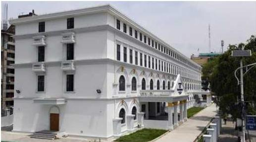
नेपाल परिचय/२८५
देशमा ५ वर्ष वा सोभन्दा बढी उमेरका कुल जनसङ्ख्यामा साक्षरता दर ७६.२ प्रतिशत रहेको छ। पुरुषको साक्षरता दर ८३.६ प्रतिशत छ भने महिलाको साक्षरता दर ६९.४ प्रतिशत रहेको छ। २०६८ को जनगणनामा कुल साक्षरता दर ६५.९ प्रतिशत, पुरुषको साक्षरता दर ७५.१ प्रतिशत र महिलाको साक्षरता दर ५७.४ प्रतिशत रहेको थियो।
शैक्षिक सत्र २०८१ मा ३३ हजार ४ सय ८० सामुदायिक (संघीय सरकारको अनुदानमा र स्थानीय तहबाट सञ्चालितसमेत) र ७८१४ संस्थागत गरी ४१ हजार २ सय ८४ प्रारम्भिक बालविकास केन्द्र तथा पूर्वप्राथमिक कक्षा सञ्चालनमा रहेका छन्। शैक्षिक सत्र २०८० मा यस्तो सङ्ख्या ४० हजार ६ सय ८४ रहेको थियो।
तालिका नं. ८.१
प्रदेशगत साक्षरता दर
| प्रदेश | साक्षरता दर | ||
|---|---|---|---|
| पुरुष | महिला | कुल | |
| कोशी | ८६.१ | ७३.६ | ७९.७ |
| मधेश | ७२.५ | ५४.७ | ६३.५ |
| बागमती | ८८.३ | ७६ | ८२.१ |
| गण्डकी | ८८.८ | ७५.३ | ८१.७ |
| लुम्बिनी | ८५.२ | ७१.७ | ७८.१ |
| कर्णाली | ८३.३ | ६९.४ | ७६.१ |
| सुदूरपश्चिम | ८५.४ | ६८.२ | ७६.२ |
स्रोत : राष्ट्रिय जनगणना, २०७८
तालिका नं. ८.२
विद्यालय प्रकारअनुसारका विद्यालयको विवरण
| प्रकार | सामुदायिक | परम्परागत मात्र | संस्थागत | जम्मा |
|---|---|---|---|---|
| आधारभूत तह (कक्षा १-५) | १४१५७ | ११६५ | १९३५ | १७२५७ |
| आधारभूत तह (कक्षा १-८) | ४५९६ | १६७ | १८८५ | ६६४८ |
| माध्यमिक तह (कक्षा १-१०) | ३३४३ | ५८ | ३०९२ | ६४९३ |
| माध्यमिक तह (कक्षा १-१२) | ३७७८ | ३४ | १२३७ | ५०४९ |
| जम्मा | २५८७४ | १४२४ | ८१४९ | ३५४४७ |
स्रोत : आर्थिक सर्वेक्षण २०८१/०८२
२८६/नेपाल परिचय
तालिका नं. ८.३ सामुदायिक र संस्थागत विद्यालयमा कार्यरत शिक्षक विवरण २०८१
| तह | सामुदायिक विद्यालय | संस्थागत विद्यालय | कुल | ||||||
|---|---|---|---|---|---|---|---|---|---|
| महिला | पृष्ठ | जम्मा | महिला | पृष्ठ | जम्मा | महिला | पृष्ठ | जम्मा | |
| आधारभूत (कक्षा १-५) | ५३९७३ | ५९६३१ | ११३६०४ | ३०४१४ | १०२१७ | ४०६३१ | ८४३८७ | ६९८४८ | १५४२३५ |
| आधारभूत (कक्षा ६-८) | १२५३५ | २९११२ | ४१६४७ | १११९२ | १२११९ | २३३११ | २३७२७ | ४१२३१ | ६४९५८ |
| माध्यमिक (कक्षा ९-१०) | ४५५४ | २१५९३ | २६१४७ | ४९३६ | १७९४३ | २२८७९ | ९४९० | ३९५३६ | ४९०२६ |
| माध्यमिक (कक्षा ११-१२) | ८६१ | ६०८५ | ६९४६ | ७४८ | ३६७२ | ४४२० | १६०९ | ९७५७ | ११३६६ |
| जम्मा | ७१९२३ | ११६४२१ | १८८३४४ | ४७२९० | ४३९५१ | ९१२४१ | ११९२१६ | १६०३७२ | २७९५८९ |
स्रोत : आर्थिक सर्वेक्षण २०८१/०८२
आर्थिक सर्वेक्षण २०८१/०८२ अनुसार शैक्षिक सत्र २०८१ मा सामुदायिक तथा संस्थागत विद्यालय (कक्षा १-१२) मा अध्ययनरत कुल विद्यार्थीमध्ये छात्र ५१.९ प्रतिशत र छात्रा ४८.१ प्रतिशत रहेका छन्। शैक्षिक सत्र २०८० मा विद्यालय तहमा अध्ययनरत विद्यार्थीको सङ्ख्या (कक्षा १-१२) ७१ लाख ४३ हजार २ सय ६२ रहेकोमा शैक्षिक सत्र २०८१ मा १.९ प्रतिशतले न्यून भई २०८१ मा ७० लाख १० हजार ८ सय ८ रहेको छ। शैक्षिक सत्र २०८० मा यस्तो सङ्ख्या १.३ प्रतिशतले घटेको थियो। कक्षा १० को टिकाउ दर र विद्यालय उमेरसमूहको जनसङ्ख्यामा आएको कमी जस्ता कारणले विद्यार्थी सङ्ख्या घटेको अनुमान छ।
शैक्षिक सत्र २०८१ मा आधारभूत तह (कक्षा १-८) को खुद भर्ना दर ९४.१ प्रतिशत र माध्यमिक तह (कक्षा ९-१२) को खुद भर्ना दर ५५.८ प्रतिशत पुगेको छ। शैक्षिक सत्र २०८१ मा कक्षा ८ सम्मको टिकाउ दर ८६.५ प्रतिशत, कक्षा १० सम्मको टिकाउ दर ६६.९ प्रतिशत र कक्षा १२ सम्मको टिकाउ दर ४०.६ प्रतिशत पुगेको छ।
८.२ स्वास्थ्य
नेपालको संविधानले प्रत्येक नागरिकलाई राज्यबाट आधारभूत स्वास्थ्य सेवा निःशुल्क प्राप्त गर्ने हक, प्रत्येक व्यक्तिलाई आफ्नो स्वास्थ्योपचारको सम्बन्धमा जानकारी पाउने हक, प्रत्येक नागरिकलाई स्वास्थ्य सेवामा समान पहुँचको हकका साथै प्रत्येक नागरिकलाई स्वच्छ खानेपानी तथा सरसफाइमा पहुँचको हक प्रदान गरेको छ। यही संवैधानिक व्यवस्था
नेपाल परिचय/२८७
एवम् क्षेत्रीय तथा अन्तर्राष्ट्रिय मञ्चमा जनाइएको प्रतिबद्धताअनुरूप गुणस्तरीय स्वास्थ्य सेवामा सबै नागरिकको पहुँच सुनिश्चित गर्ने कार्यमा सरकार क्रियाशील रहँदै आएको छ। यसै क्रममा सन् १९५३ मा नेपाल WHO को सदस्य राष्ट्रसमेत भएको छ।
योजनाबद्ध विकास प्रक्रियाको क्रममा स्वास्थ्य क्षेत्रमा भएका नीतिगत, कार्यक्रमगत, जनशक्ति विकास, औषधि उपकरण आपूर्ति र संस्थागत प्रयासबाट स्वास्थ्य सेवा प्रवाहमा समावेशी रूपमा भइरहेको सङ्ख्यात्मक र गुणात्मक विकासले जनसाधारणको गुणस्तरीय स्वास्थ्य सेवामा पहुँच बढेको छ। यसका अतिरिक्त निजी, सामुदायिक र गैरसरकारी क्षेत्र तथा स्थानीय तहबाट पनि स्वास्थ्य सेवामा थप योगदान पुगेको छ। नेपालमा सञ्चालित राष्ट्रिय खोप कार्यक्रमलगायत विविध खोप कार्यक्रम र सङ्क्रामक तथा असङ्क्रामक रोगसम्बन्धी सेवामा गुणात्मक र सङ्ख्यात्मक सुधार भएबाट हाल औसत आयु ७१.३ वर्ष पुगेको छ। कुल प्रजनन दर (प्रतिमहिला) १.९, नवजात शिशु मृत्युदर (प्रतिहजार जीवित जन्मेको २८ दिनभित्र) २१, शिशु मृत्युदर (प्रतिहजार जीवित जन्मेको एक वर्षभित्र) २८ र ५ वर्षमुनिको बाल मृत्युदर (प्रतिहजार जीवित जन्ममा) ३३ रहेको छ।
यद्यपि दुर्गम जिल्ला/बस्ती र गरिबीको रेखामुनि रहेका र पिछडिएका वर्गको स्वास्थ्य सेवामा पहुँच सरल, सुलभ र व्यापक हुन सकेको छैन र स्वास्थ्य स्थितिमा अपेक्षाकृत रूपमा सुधार आउन सकेको छैन। सांस्कृतिक, लैङ्गिक, आर्थिक र सामाजिक व्यवधानहरूले गर्दा पनि उपलब्ध स्वास्थ्य सेवाहरू समतामूलक रूपमा प्रवाह हुन सकेका छैनन्।
२०८१/०८२ को आर्थिक सर्वेक्षणका अनुसार २०८१ को फागुनसम्म देहायबमोजिमको स्वास्थ्य सेवा तथा जनशक्ति रहेको छ :
तालिका नं. ८.४ स्वास्थ्य सेवा तथा जनशक्ति विवरण
| विवरण (२०८१) | जम्मा | |
|---|---|---|
| १. | जम्मा स्वास्थ्य संस्था | ८७४६ |
| क) | अस्पताल | ३४५ |
| ख) | प्राथमिक स्वास्थ्य केन्द्र | १४९ |
| ग) | स्वास्थ्य चौकी | ३७४२ |
| घ) | आयुर्वेदिक औषधालय | ४२६ |
| ङ) | उपस्वास्थ्य चौकी/आधारभूत स्वास्थ्य सेवा केन्द्र | ४०८४ |
| २. | अस्पताल शाखा | १८६४० |
| ३. | जम्मा जनशक्ति | १०४७९३ |
२८८/नेपाल परिचय
| क) | डाक्टर | ७०३० |
|---|---|---|
| ख) | नर्स र अ.न.मी. | २८६५० |
| ग) | कविराज | ६८४ |
| घ) | वैद्य | ६९३ |
| ङ) | स्वास्थ्य सहायक (हे.अ., अ.हे.व.) | १६३१३ |
| च) | महिला स्वास्थ्य स्वयंसेविका | ५१४२३ |
स्रोत : आर्थिक सर्वेक्षण, २०८१/८२
८.३ खेलकुद
व्यक्तिको शारीरिक तन्दुरुस्ती, सामाजिक, मानसिक र संवेगात्मक पक्षको सन्तुलित विकासमा खेलकुदको महत्वपूर्ण भूमिका रहन्छ। खेलकुद राष्ट्रिय एकता सुदृढ गर्ने र अन्तर्राष्ट्रिय क्षेत्रमा राष्ट्रिय पहिचान स्थापित गर्ने प्रमुख माध्यमको रूपमा रहिआएको छ। खेलकुदको विकास र विस्तार गरी स्वस्थ, सक्षम र अनुशासित नागरिक तयार गरी अन्तर्राष्ट्रिय जगतमा राष्ट्रको सम्मान अभिवृद्धि गर्दै पहिचान स्थापित गर्ने लक्ष्य नेपालले लिएको छ।
नेपालमा खेलकुदसम्बन्धी गतिविधि तयार गर्ने सबैभन्दा ठुलो निकाय वा संस्थाका रूपमा राष्ट्रिय खेलकुद परिषद् (राखेप) रहेको छ। विधिवत् रूपमा नेपाली राष्ट्रिय खेलकुद परिषद् (राखेप) को स्थापना वि.सं. २०१७ साल फागुन १७ गते भएको थियो। २०१५ सालमा स्थापित राष्ट्रिय स्वास्थ्य तथा खेलकुद परिषद्को नाम परिवर्तन गरी राष्ट्रिय खेलकुद परिषद् वा छोटकरीमा राखेप राखिएको थियो। तर नेपालमा राखेपको गठन हुनुभन्दा अगाडिदेखि नै क्रिकेट, ब्याडमिन्टन, टेबलटेनिस, फुटबल, हकी तथा टेनिस जस्ता खेलकुदहरूका सङ्घको गठन भइसकेको थियो। हाल नेपालको राष्ट्रिय खेलको मान्यता आधिकारिक रूपमा मिति २०७४ जेठ ८ गते सरकारले गरेको निर्णयानुसार भलिबल खेलले पाएको छ। यसअघि कपर्दी तथा डन्डबियोलाई राष्ट्रिय खेलकुदको उपमा दिइए तापनि औपचारिक रूपमै घोषणा भने गरिएको थिएन।
८.३.१ नेपाल राष्ट्रिय खेलकुद
नेपाली खेलकुद जगतको सबैभन्दा ठुलो खेलकुद महाकुम्भका रूपमा नेपाल राष्ट्रिय खेलकुदलाई लिन सकिन्छ। नेपाल राष्ट्रिय खेलकुदको सुरुवात वि.सं. २०३८ सालदेखि भएको थियो। यस प्रतियोगिता हरेक दुई-दुई वर्षको अन्तरालमा आयोजना गर्ने भनिए तापनि नेपालको आन्तरिक समस्याहरूका कारण त्यो सम्भव भने हुन सकेको छैन। त्यसैले राखेपले २०७९ सालसम्म आउँदा जम्मा नौओटा राष्ट्रिय खेलकुदका संस्करणहरू आयोजना गर्न सफल भएको छ।
नेपाल परिचय/२८९
२९०/नेपाल परिचय
(क) पहिलो संस्करण
नेपालको राष्ट्रिय खेलकुदको पहिलो संस्करण २०३८ साल भदौ २७ गतेदेखि असोज ४ गतेसम्म काठमाडौँको दशरथ रङ्गशालामा आयोजना भएको थियो । बागमती अञ्चलमा आयोजना भएको यस प्रथम राष्ट्रिय खेलकुद ९ दिनसम्म चलेको थियो । प्रतियोगितामा बागमती अञ्चल प्रथम, गण्डकी अञ्चल दोस्रो र कोशी अञ्चलले तेस्रो स्थान हासिल गरेका थिए ।
(ख) दोस्रो संस्करण
यो प्रतियोगिता २०४० चैत १२ गतेदेखि २० गतेसम्म पोखराको पोखरा स्पोर्ट्स कम्प्लेक्समा सञ्चालन भएको थियो । यस प्रतियोगिताको उद्घाटन तत्कालीन राजा श्री ५ वीरेन्द्र शाहदेवबाट भएको थियो । यस प्रतियोगितामा लोगोको रूपमा नेपालको राष्ट्रिय फूल लालीगुराँस राखिएको थियो । उक्त खेलमा बागमती अञ्चल प्रथम, गण्डकी अञ्चल दोस्रो र कोशी अञ्चलले तेस्रो स्थान हासिल गरेका थिए ।
(ग) तेस्रो संस्करण
यो प्रतियोगिता २०४२ फागुन २३ गते तत्कालीन नेपालका राजा श्री ५ वीरेन्द्र शाहले उद्घाटन गरी सम्पन्न भएको थियो भने यो प्रतियोगिताको उद्घाटन र समापन समारोह वीरगन्ज रङ्गशालामा भएको थियो । तेस्रो राष्ट्रिय खेलकुद प्रतियोगिताको लोगोका रूपमा बाघ राखिएको थियो र उक्त बाघको नाम बले राखिएको थियो । उक्त प्रतियोगितामा बागमती अञ्चल प्रथम, कोशी अञ्चल दोस्रो र नारायणी अञ्चलले तेस्रो स्थान हासिल गरेका थिए ।
(घ) चौथो संस्करण
यो प्रतियोगिता वि.सं. २०५५ चैत्र ८ देखि १४ सम्म नेपालगन्जमा सम्पन्न भएको थियो । विकास क्षेत्रअनुसार भएको यो पहिलो प्रतियोगिता हो । प्रतियोगितामा जम्मा ७ टिम सहभागी भएका थिए । मध्यमाञ्चल विकास क्षेत्र प्रथम, नेपाली सेना दोस्रो र नेपाल प्रहरी तेस्रो भएको थिए ।
(ङ) पाँचौँ संस्करण
यो प्रतियोगिता वि.सं. २०६५ चैत्र २४ देखि ३० सम्म काठमाडौँमा सम्पन्न भएको थियो । यो संस्करणमा क्षेत्रीय र खुला गरी दुई तरिकाबाट प्रतिस्पर्धा गराइएको थियो । जसअनुसार क्षेत्रीय प्रतियोगितातर्फ मध्यमाञ्चल विकास क्षेत्र प्रथम, एपिएफ दोस्रो र नेपाल प्रहरीले तेस्रो स्थान हासिल गरेका थिए । त्यस्तै, खुलातर्फ मध्यमाञ्चल विकास क्षेत्र प्रथम, एपिएफ दोस्रो र नेपाल प्रहरी तेस्रो स्थानमा रहेका थिए ।
(च) छैटौँ संस्करण
यो प्रतियोगिता वि.सं. २०६८ चैत्र १४-२१ सम्म सुदूरपश्चिमाञ्चल विकास क्षेत्रको धनगढी र महेन्द्रनगरमा सम्पन्न भएको थियो । १० टिमको सहभागिता रहेको उक्त
प्रतियोगितामा मध्यमाञ्चल विकास क्षेत्र प्रथम, नेपाल प्रहरी दोस्रो र सशस्त्र प्रहरी बल नेपाल तेस्रो भएका थिए ।
(छ) सातौँ संस्करण
यो प्रतियोगिता पूर्वाञ्चल विकास क्षेत्रको विराटनगरमा वि.सं. २०७३ पौष ८ देखि १५ सम्म सम्पन्न भएको थियो । प्रतियोगितामा नेपाली सेना प्रथम, सशस्त्र प्रहरी बल नेपाल दोस्रो र नेपाल प्रहरीले तेस्रो स्थान हासिल गरेका थिए ।
(ज) आठौँ राष्ट्रिय खेलकुद प्रतियोगिता
बाँकेको नेपालगन्जमा २०७५ सालमा सम्पन्न भएको प्रतियोगिताका खेलहरू चैत २७ देखि सुरु भए पनि औपचारिक उद्घाटन भने वैशाख ५ गते भएको थियो । यस प्रतियोगितामा ३५ खेलमा पाँच हजारभन्दा बढी खेलाडी प्रतिस्पर्धी थिए । जसमा विभागीय टिमले शीर्ष तीन स्थान हासिल गन्यो । प्रतियोगितामा नेपाल आर्मी पहिलो, नेपाल पुलिस दोस्रो र सशस्त्र प्रहरी बल नेपाल तेस्रो भएका थिए । नवौँ राष्ट्रिय खेलकुद प्रतियोगिता दुई वर्षभित्र गण्डकी प्रदेशमा आयोजना गर्ने निर्णय भएको थियो ।
(भ) नवौँ राष्ट्रिय खेलकुद प्रतियोगिता
“एकताबद्ध देश, खेलकुदको सन्देश” भन्ने मूल नाराका साथ गण्डकी प्रदेशको पोखरामा २०७९ जेठ २२ देखि २८ गतेसम्म आयोजना गरिएको नेपाली खेलकुदको कुम्भ मेला नवौँ राष्ट्रिय खेलकुद प्रतियोगिता सम्पन्न भएको थियो । प्रतियोगितामा सातवटा प्रदेशसहित नेपाली सेना, नेपाल प्रहरी र सशस्त्र प्रहरी गरी तीन विभागीय र एक गैरआवासीय नेपाली सङ्घ (एनआरएन) गरी ११ टोलीबीच प्रतिस्पर्धा भएको थियो । प्रतियोगितामा ३६ खेलमा ६ हजारभन्दा बढी खेलाडी प्रतिस्पर्धी थिए । जसमा विभागीय टिमले शीर्ष तीन स्थान हासिल गन्यो । प्रतियोगितामा नेपाल आर्मी क्लब पहिलो, एपिएफ दोस्रो र नेपाल पुलिस क्लब तेस्रो भएका थिए । यस प्रतियोगिताको ट्रफी २०७९ भदौ ३१ गते प्रधानमन्त्रीनिवास बालुवाटारमा पूर्वप्रधानमन्त्री शेरबहादुर देउवाले सार्वजनिक गरेका थिए । दशौँ राष्ट्रिय प्रतियोगिता २०८१ मंसिर २ देखि ९ सम्म कर्णाली प्रदेशमा गर्ने निर्णय गरेको छ ।
तालिका नं. ८.५ नवौँ राष्ट्रिय खेलकुदको पदक तालिका
| क्र.सं. | टिम | स्वर्ण | रजत | कांस्य | जम्मा |
|---|---|---|---|---|---|
| १ | नेपाल आर्मी | १७२ | ११० | ८९ | ३७१ |
| २ | एपिएफ | ६५ | ७२ | ८२ | २१९ |
| ३ | नेपाल पुलिस क्लब | ६१ | ६१ | ७३ | १९५ |
नेपाल परिचय/२९१
| ४ | गण्डकी प्रदेश | ३२ | ३१ | ५७ | १२० |
|---|---|---|---|---|---|
| ५ | बागमती प्रदेश | २४ | ४७ | ७४ | १४५ |
| ६ | कोशी प्रदेश | १० | २३ | ५० | ८३ |
| ७ | सुदूरपश्चिम प्रदेश | १० | १० | ४३ | ६३ |
| ८ | एनआरएनए | १० | ९ | ७ | २६ |
| ९ | लुम्बिनी प्रदेश | ६ | २२ | ४० | ६८ |
| १० | मधेश प्रदेश | ५ | ८ | २६ | ३९ |
| ११ | कर्णाली प्रदेश | २ | ४ | १२ | १८ |
स्रोत : राष्ट्रिय खेलकुद परिषद्
८.३.२ नेपालका ठूला घरेलु खेलकुद प्रतियोगिताहरू
नेपाल राष्ट्रिय खेलकुद (बृहत्) राखेप ज्याम्पियनसीप (बृहत्) सहिद स्मारक ए-डिभिजन लिग (फुटबल) एन्फा कप (फुटबल) एभरेस्ट प्रिमियर लिग (क्रिकेट) धनगढी प्रिमियर लिग (क्रिकेट) पोखरा प्रिमियर लिग (क्रिकेट) एनभिए राष्ट्रिय लिग (भलिबल) राष्ट्रिय ह्यान्डबल प्रतियोगिता (ह्यान्डबल) राष्ट्रिय बुद्धिचाल प्रतियोगिता (बुद्धिचाल) प्रधानमन्त्री कप क्रिकेट प्रतियोगिता
८.३.३ नेपालको खेल सङ्ग्रहालय
काठमाडौँ स्थित दशरथ रड्गशालाको दक्षिणतर्फको प्याराफिट तल एउटा कोठामा नेपालकै पहिलो ओलम्पिक सङ्ग्रहालय रहेको छ। यो सङ्ग्रहालयको स्थापना २०५२ सालमा भएको थियो। यो सङ्ग्रहालय २०५६ साल असोज महिनामा लगभग २ लाख ५० हजारको लागतमा नेपालकै पहिलो खेलकुद सङ्ग्रहालयका रूपमा स्थापना भएको थियो। यो सङ्ग्रहालयमा नेपाली खेल इतिहास दर्साउने अनेक खेल सामग्रीहरू रहेका छन्।
८.३.४ अन्तर्राष्ट्रिय खेलकुदमा नेपालको सहभागिता
नेपालले अन्तर्राष्ट्रिय खेलकुदमा सन् १९५१ मा भारतको नयाँ दिल्लीमा भएको प्रथम
२९२/नेपाल परिचय
एसियाली खेलकुदबाट सहभागिता जनाएको थियो । यस्तै, नेपालका तर्फबाट अन्तर्राष्ट्रिय सहभागितामा पहिलो पटक पदक जित्ने खेलाडी जितबहादुर केसी हुन् । उनले सन् १९७३ मा फिलिपिन्सको मनिलामा आयोजना भएको पहिलो एसियन ट्र्याक एन्ड फिल्ड च्याम्पियनसीपमा कांस्य पदक जितेका थिए । नेपाललाई अन्तर्राष्ट्रिय प्रतियोगितामा स्वर्ण पदक जिताउने प्रथम खेलाडी भने बैकुण्ठ मानन्धर हुन् । उनले पहिलो दक्षिण एसियाली खेलकुदमा म्याराथनतर्फ नेपालका लागि पहिलो स्वर्ण पदक जितेका थिए ।
८.३.५ ओलम्पिक खेलमा नेपाल
नेपालले पहिलोपटक सन् १९६४ मा जापानको टोकियोमा भएको ओलम्पिक खेलदेखि ओलम्पिक खेलमा सहभागिता जनाउन सुरु गरेको हो । साथै, नेपालले सन् १९६८ सालमा मेक्सिकोमा भएको ओलम्पिक खेलबाहेक अहिलेसम्म सबै ओलम्पिक खेलमा सहभागिता जनाउँदै आएको छ । नेपालले उक्त ओलम्पिकमा बक्सिङ तथा म्याराथन गरी जम्मा दुई खेलमा मात्र सहभागिता जनाएको थियो । यस ओलम्पिकमा सुशीलशमशेर जबराको नेतृत्वमा रहेको नेपालका तर्फबाट म्याराथन दौडमा गड्गाबहादुर थापा र भूपेन्द्र केसीले सहभागिता जनाएका थिए भने बक्सिङ खेलमा नामसिंह थापा, रामप्रसाद गुरुङ र ओमप्रसाद पुनले सहभागिता जनाएका थिए ।
सन् १९८८ को सियोल ओलम्पिकमा प्रदर्शनी खेल तेक्वान्दोमा विधान लामाले कांस्य पदक जितेका थिए । तर, यो पदक ओलम्पिक खेलको पदक तालिकामा गणना नहुने हुँदा नेपाल ओलम्पिक खेलमा सहभागितामा मात्र सीमित रहन पुगेको छ । तर नेपाली खेलाडीले ओलम्पिकका खेलहरूमा अनेक राष्ट्रिय कीर्तिमान कायम गर्न भने सफल भएका छन् ।
८.३.६ दक्षिण एसियाली खेलकुदमा नेपाल
वास्तवमा नेपाली खेलाडीहरूले आफ्नो खेल कौशल प्रदर्शन गर्ने प्रमुख बृहत् खेलकुद प्रतियोगिता नै दक्षिण एसियाली खेलकुद र साग गेम हो । नेपाल दक्षिण एसियाली खेलकुदमा आफ्नै किसिमको पहिचान बनाउन सफल भइसकेको छ । नेपाली खेलाडीहरूले दक्षिण एसियाली खेलकुद क्षेत्रमा अनेक कीर्तिमानसमेत राख्न सफल भएका छन् । कुनै पनि बृहत् खेलकुदको सर्वाधिक महत्त्वपूर्ण तथा ठुलो स्वर्ण पदकका रूपमा लिइने फुटबल खेलतर्फको स्वर्ण पदक नेपाली पुरुष टिमले तीन पटक जितिसकेको छ । तर, महिला टिमले लगातार फाइनलमा स्थान बनाए पनि फाइनलमा भारतसँग पराजित हुँदै रजत पदकमा चित्त बुभ्नाउनुपरेको थियो ।
नेपालले हालसम्म तीन पटक दक्षिण एसियाली खेलकुदको सफल आयोजना गरिसकेको छ । सन् १९८४ मा भएको पहिलो साफको संस्करणमा नेपालले ४ स्वर्णसहित कुल २४ पदक जित्न सफल भएको थियो । उक्त साफमा म्याराथनका खेलाडी बैकुण्ठ मानन्धरले नेपाली खेलकुद जगत्मा नै पहिलो अन्तर्राष्ट्रिय स्वर्ण
नेपाल परिचय/२९३
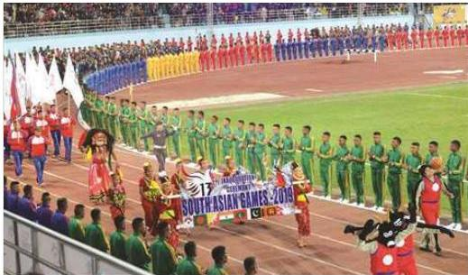
१३औ दक्षिण एसियाली खेलकुद उद्घाटन, काठमाडौँ
पदक जित्न सफल भएका थिए । साथै, नेपाली राष्ट्रिय फुटबल टिमले फुटबलतर्फको महत्वपूर्ण स्वर्ण हात पादर्य नेपालले दुई स्वर्ण बक्सिङ खेलबाट जितेको थियो । यस साफ गेममा नेपालले स्वर्ण पदकबाहेक १२ रजत पदक तथा ८ कांस्य पदक जितेको थियो र सात देश सहभागी पदक तालिकामा चौथो स्थानमा रहन सफल भएको थियो । यस्तै, नेपालले दोस्रो पटक सन् १९९९ मा आठौँ साफ खेलकुदको आयोजना गरेको थियो । यो साग गेम नेपालका लागि सुखद तथा उत्कृष्ट साग गेम हो । जसमा नेपालले अपेक्षा गरेको भन्दा बढी सफलता प्राप्त गरेको थियो । आयोजक नेपालले यस साग गेममा सर्वाधिक ३१ स्वर्ण पदक जित्न सफल भएको थियो, जबकि नेपालले यो सागमा जम्मा १५ स्वर्ण पदकको मात्र अपेक्षा गरेको थियो । नेपालका लागि ऐतिहासिक रहेको यस साग गेममा नेपालले ३१ स्वर्ण पदक, १० रजत पदक र २४ कांस्य पदकसहित कुल ६५ पदक जितेको थियो । यसै साग गेममा नेपाल पहिलो पटक स्वर्ण पदकको आधारमा प्रतियोगिताको अन्तिम पदक तालिकाको दोस्रो स्थानमा रहन सफल भएको थियो ।
यस्तै, नेपालले तेस्रो पटक सन् २०१९ मा तेह्रौँ साग खेलकुदको आयोजना गरेको थियो । यो साग गेम नेपालका लागि अहिलेसम्मकै सुखद तथा उत्कृष्ट साग गेम हो । जुन साग गेममा नेपालले अपेक्षा गरेकोभन्दा बढी सफलता प्राप्त गरेको थियो । आयोजक नेपालले यस साग गेममा सर्वाधिक ५१ स्वर्ण पदक जित्न सफल भएको थियो । नेपालका लागि ऐतिहासिक रहेको यस साग गेममा नेपालले ५१ स्वर्ण पदक, ६० रजत पदक र ९६ कांस्य पदकसहित कुल २०७ पदक जितेको थियो । यसै साग गेममा नेपाल स्वर्ण पदकको आधारमा प्रतियोगिताको अन्तिम पदक तालिकाको दोस्रो स्थानमा रहन सफल भएको थियो । नेपाललाई पहिलो पदक दिलाउने खेलाडी चन्चला दुनुवार कराँते, पहिलो स्वर्ण
२९४/नेपाल परिचय
पदक दिलाउने मण्डेकाजी श्रेष्ठ कराँते, सबैभन्दा बढी ४ स्वर्ण पदक दिलाउने गौरिका सिंह पौडीका खेलाडी हुन् ।
तालिका नं. ८६
दक्षिण एसियाली खेलकुदमा नेपाल
(सन् १९८४ देखि सन् २०१९ सम्म)
| वर्ष | आयोजक | स्वर्ण | रजत | कांस्य | स्थान |
|---|---|---|---|---|---|
| १९८४ | नेपाल | ४ | १२ | ८ | चौथो |
| १९८५ | बड्गलादेश | १ | ९ | २२ | पाँचौँ |
| १९८७ | भारत | २ | ७ | ३३ | पाँचौँ |
| १९८९ | पाकिस्तान | १ | १० | २१ | पाँचौँ |
| १९९१ | श्रीलंका | २ | ८ | २९ | पाँचौँ |
| १९९३ | बड्गलादेश | १ | ६ | १५ | पाँचौँ |
| १९९५ | भारत | ४ | ८ | १६ | पाँचौँ |
| १९९९ | नेपाल | ३१ | १० | २४ | दोस्रो |
| २००४ | पाकिस्तान | ७ | ६ | २० | चौथो |
| २००६ | श्रीलंका | १५ | १४ | ३१ | चौथो |
| २०१० | बड्गलादेश | ८ | ९ | १९ | पाँचौँ |
| २०१६ | भारत | ३ | २३ | ३४ | छैटौँ |
| २०१९ | नेपाल | ५१ | ६० | ९६ | दोस्रो |
स्रोत : राष्ट्रिय खेलकुद परिषद्
८.४ खानेपानी तथा सरसफाइ
राष्ट्रिय योजना आयोगका अनुसार नेपाल सरकारले “दिगो विकासका लक्ष्यहरू, सन् २०१५-२०३०” अनुरूप सन् २०३० सम्म ९९ प्रतिशत जनसङ्ख्यालाई आधारभूत स्तरको खानेपानी र सरसफाइ सेवा उपलब्ध गराउने लक्ष्य लिएको छ ।
सरकारी क्षेत्रको प्रयासबाट मात्र उक्त लक्ष्य हासिल गर्न नसकिने भएकाले सरकार, स्थानीय तह, समुदाय, उपभोक्ता तथा गैरसरकारी सङ्घ-संस्थाहरूले एकीकृत तथा समन्वयात्मक रूपमा कार्य गर्नु आवश्यक रहेको छ । साथै, कार्यक्रम सञ्चालन गर्दा खानेपानी र सरसफाइ कार्यक्रमलाई एकआपसमा आबद्ध गरी कार्यान्वयनमा लैजानुपर्ने देखिन्छ ।
नेपाल परिचय/२९५
आर्थिक सर्वेक्षण २०८१/०८२ को अनुसार २०८१ फागुनसम्म आधारभूत खानेपानी सेवाको पहुँच पुगेको जनसङ्ख्या ९६.८५ प्रतिशत र सुरक्षित खानेपानी (उच्चमध्यम स्तर) सेवाको पहुँच पुगेको जनसङ्ख्या २८.५९ प्रतिशत पुगेको छ। २०८१ असारसम्म यस्तो जनसङ्ख्या ९६.७५ प्रतिशत र २७.७६ प्रतिशत रहेको थियो।
खानेपानीको क्षेत्रमा बहुनिकाय क्रियाशील रहेका छन्। खानेपानीको गुणस्तर तथा सेवास्तर वृद्धि गर्न सहरी तथा अर्धसहरी क्षेत्रमा उपभोक्ताहरूको सहलगानीमा आयोजनाहरू कार्यान्वयनमा रहेका छन्। सम्बद्ध निकाय र सरोकारवालाहरूसँगको सहकार्य र सहभागितामा पूर्ण सरसफाइ कार्यक्रम सञ्चालन गरी खुला दिशामुक्त क्षेत्र विकास गर्दै लैजाने एकल सरसफाइ कार्यक्रम सुरु गरिएको पाइन्छ भने बागमती नदी सफाइले महाअभियानको रूप लिई देशभरका नदीनाला सफा राख्ने सन्देश दिएको देखिन्छ।
८.५ यातायात
८.५.१ सडक यातायात
यातायात आर्थिक विकास, सार्वजनिक सेवा प्रवाह र सामाजिक एकीकरणको माध्यम हो। विकासको आधारभूत पूर्वाधारको रूपमा रहेका यातायातका साधनहरू राष्ट्रिय गौरवका आयोजनाका माध्यमबाट क्षेत्रीय असमानता कम गर्न, आर्थिक क्रियाकलापलाई गतिशीतला प्रदान गर्न र अन्य क्षेत्रको विकास तथा सेवा प्रवाहलाई सहज बनाउन सकिने उपयुक्त माध्यम हो। हालसम्म नेपालमा सडकलाई यातायातको मुख्य माध्यमको रूपमा लिइँदै आएको भए तापनि हवाईमार्ग, रेलमार्ग, जलमार्ग, रज्जुमार्ग जस्ता अन्य माध्यमहरूको विकासबाट पनि पर्याप्त फाइदा लिन सकिने सम्भावना रहेको छ।
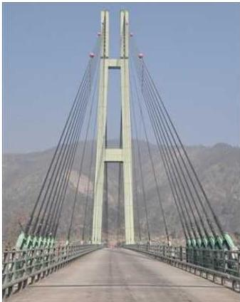
२९६/नेपाल परिचय
तालिका नं. ८.७ नेपालका राष्ट्रिय राजमार्गहरू
| क्र.सं. | राजमार्ग सडकैत | सडकको नाम | लम्बाइ कि. मि. |
|---|---|---|---|
| १. | NH01 | पूर्व-पश्चिम (महेन्द्र) राजमार्ग | १०२८ |
| २. | NH02 | केचना-चन्द्रगढी-ताप्लेजुड-ओलाडचुडगोला (मेची राजमार्ग) | ३५२ |
| ३. | NH03 | पुष्पलाल (मध्य पहाडी) राजमार्ग | १७८७ |
| ४. | NH04 | बितामोड-मेची पुल | १५ |
| ५. | NH05 | हुलाकी राजमार्ग | १०१६ |
| ६. | NH06 | चतरा-गणेशचोक (तमोर करिडोर) | १३५ |
| ७. | NH07 | पकली-नदाहा कोशीपुल चतरा | ६६ |
| ८. | NH08 | रानी-किमाथाड्का (कोशी राजमार्ग) | ३२० |
| ९. | NH09 | बाहुनडाँगी-जोगबुडा-रुपाल (मदन भण्डारी राजमार्ग) | १२०० |
| १०. | NH10 | देउराली-बोहराटार | ९२ |
| ११. | NH11 | फिकल-छबिसे, इलाम | १९ |
| १२. | NH12 | घुमौँ-चतरा-उदयपुर | १६३ |
| १३. | NH13 | बर्दिवास-धुलिखेल (बि.पी. राजमार्ग) | १६० |
| १४. | NH14 | गाईघाट-बसाहा उदयपुर | १०० |
| १५. | NH15 | खाकौँ-दाहालटार | १२८ |
| १६. | NH16 | ठाँडी-सोलु | १४४ |
| १७. | NH17 | नौबिसे-मुग्लिन-पोखरा (पृथ्वी राजमार्ग) | १७३ |
| १८. | NH18 | बालाजु-स्याफ्रुबेसी | ६५ |
| १९. | NH19 | रिडी-सुखेत सडक | २२० |
| २०. | NH20 | माडर-सल्लेरी | १९३ |
| २१. | NH21 | सितापाइला-धार्के | २४ |
| २२. | NH22 | ढल्केवर-अकराहरघाट | ४८ |
| २३. | NH23 | दिलेल-खाडीचौर | २९१ |
| २४. | NH24 | लालगड-बाहुनमारा-बि.पी. राजमार्ग | २९ |
| २५. | NH25 | डुम्बे-बेसीसहर-चामे | १०८ |
| २६. | NH26 | जमुनिवास-कुथाँ-जनकपुर | १९ |
नेपाल परिचय/२९७
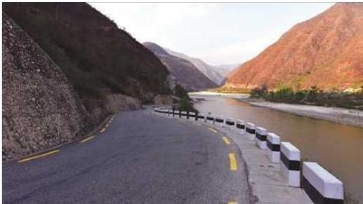
सुनकोशी किनार क्षेत्रमा बिपी राजमार्ग
| क्र.सं. | राजमार्ग सड्कैत | सडकको नाम | लम्बाइ कि. मि. |
|---|---|---|---|
| २७. | NH27 | शीतलपाटी-सल्यान-कुमिन्डे-बालुवा-सड्ग्रही | ४० |
| २८. | NH28 | भिड़ामोड-लामाबगर-लाप्चेगाउँ | २८१ |
| २९. | NH29 | कञ्चनवन-रामलक्ष्मणचोक-हेल्थपोस्ट महेन्द्र राजमार्ग | ३० |
| ३०. | NH30 | जनकपुर (मुजेलिया)-पथरा-म.रा.मा. पुष्पलपुर | ३६ |
| ३१. | NH31 | दोलालघाट-चौतारा | २५ |
| ३२. | NH32 | नवलपुर-मलंगवा-सोनवर्षा | ३० |
| ३३. | NH33 | निजगढ-काठमाडौँ | ७६ |
| ३४. | NH34 | काठमाडौँ-धुलिखेल-कोदारी (अरनिको राजमार्ग) | ११२ |
| ३५. | NH35 | पिलुहवा मानमत-कलैया-मर्टिहवा | २५ |
| ३६. | NH36 | चन्द्रपुर-गौर | ४५ |
| ३७. | NH37 | हेटौडा-एकान्तकुना (कान्ती राजपथ) | ८६ |
| ३८. | NH38 | काठमाडौँ बाहिरी चक्रपथ | ६८ |
| ३९. | NH39 | काठमाडौँ चक्रपथ | २७ |
| ४०. | NH40 | सामाखुसी-विदुर | २६ |
| ४१. | NH41 | सिसिया-काठमाडौँ (त्रिभुवन राजपथ) | १५५ |
२९८/नेपाल परिचय
| क्र.सं. | राजमार्ग सडकैत | सडकको नाम | लम्बाइ कि. मि. |
|---|---|---|---|
| ४२. | NH42 | ठोरी-रसुवागढी | १९७ |
| ४३. | NH43 | मलेखु-सल्यानटार | ५७ |
| ४४. | NH44 | ठोरी-सिदिवास-रोइला भञ्ज्याङ | ३०० |
| ४५. | NH45 | खैरनीटार-भिमाद-कावासोती | १०६ |
| ४६. | NH46 | भुमही-परासी | ९ |
| ४७. | NH47 | बेलहिया-स्याङ्जा-पोखरा (सिद्धार्थ राजमार्ग) | १८४ |
| ४८. | NH48 | तानसेन-रिडी-कोरला | २५४ |
| ४९. | NH49 | वर्तुङ-वामीटक्सार खर्वाङ | ९८ |
| ५०. | NH50 | जितपुर-तौलिहवा-खुनुवा | ३० |
| ५१. | NH51 | तौलिहवा-गोरुसिंगे-सन्धिखर्क | ८३ |
| ५२. | NH52 | कक्रहवा(भारत सिमा)-ढोरपाटन | २२२ |
| ५३. | NH53 | भालुवाङ-लिवाङ-दारबोट | १३० |
| ५४. | NH54 | कोइलावास-लमही-लुकुम (सहिद मार्ग) | २११ |
| ५५. | NH55 | अमेलिया-थारमारे-मुसीकोट (राप्ती राजमार्ग) | १६९ |
| ५६. | NH56 | थारमारे-मुगु-रारा (रारा राजमार्ग) | २६३ |
| ५७. | NH57 | छिन्चु-तिन्जे-मरिम (भेरी करडोिर) | ३१७ |
| ५८. | NH58 | जमुनाहा-खुलालु-हिल्सा (कर्णाली राजमार्ग) | ५३८ |
| ५९. | NH59 | मर्तिया (भारतीय सीमा)-ब्युली नागमा सडक | १५४ |
| ६०. | NH60 | सुखेत-गमगढी-नाक्चेलाग्ना | ३०२ |
| ६१. | NH61 | सुखेत तल्लो डुङ्गेश्वर-नागमा-जुम्ला सडक | १६८ |
| ६२. | NH62 | खकरौला-सौंफेबगर-जैनपर | २२८ |
| ६३. | NH63 | सौंफेबगर-मार्तडी-कोल्टी | १११ |
| ६४. | NH64 | खोड्पे-चनपुर (बभाङ) | १०८ |
| ६५. | NH65 | खुटिया-दीपायल-उरैभञ्ज्याङ | २९६ |
| ६६. | NH66 | धनगढी-दार्चुला-टिङ्कर | ३५० |
नेपाल परिचय/२९९
| क्र.सं. | राजमार्ग सडकैत | सडकको नाम | लम्बाइ कि. मि. |
|---|---|---|---|
| ६७. | NH67 | चाँदनी-पञ्चेश्वर-भूलाघाट | २०१ |
| ६८. | NH68 | भिमाद-मित्याल-आरुङ खोला | ८० |
| ६९. | NH69 | जगत् भञ्जयाङ-चापाकोट-गजरकोट सडक, स्याङ्जा | ४२ |
| ७०. | NH70 | सेती दोभान-आरुचार घण्टे देउराली, स्याङ्जा | ४६ |
| ७१. | NH71 | भालुवाङ-खनदह-खरवाङ | १७० |
| ७२. | NH72 | दुम्कीबास-बहुवन-त्रिवेणी | २३ |
| ७३. | NH73 | सुरुङ्गा-टंगानडुब्बा हुँदै लसुनगन्ज, भापा | २५ |
| ७४. | NH74 | इलाम (बिप्लाटे)-माइपोखरी-सन्दकपुर, इलाम | ५० |
| ७५. | NH75 | स्वर्ण सागरमाथा बृहत् चक्रपथ (ओखलढुङ्गा-सोलु-सल्लेरी - खोटाङ- दिनेल-ओखलढुङ्गा) | १३५ |
| ७६. | NH76 | दमक-चिसापानी-रवि | ४४ |
| ७७. | NH77 | भरतपुर महानगरीय बृहत् चक्रपथ | १०५ |
| ७८. | NH78 | दमक न.पा. चक्रपथ | १०० |
| ७९. | NH79 | गोदार (धनुषा) चिसापानी-दुधाली, सिन्धुली | २० |
| ८०. | NH80 | महेन्द्र राजमार्ग बस्तीपुरचौक (सिरहा)-कटारी, उदयपुर | ३० |
| जम्मा | १४९१३ |
स्रोत : सडक विभाग
काठमाडौँबाट विभिन्न जिल्लाका सदरमुकाम र अन्य केही स्थानको सडक दूरी
काठमाडौँदेखि विभिन्न जिल्लाका सदरमुकामको सडक दूरी तालिका ८.८ मा प्रस्तुत गरिएको छ। यसअनुसार काठमाडौँबाट सडक दूरीको दूषितकोणले सबैभन्दा टाढाको जिल्ला सदरमुकाम बाजुरा जिल्लाको सदरमुकाम मार्तंडी (९७२.९३ किलोमिटर) हो भने त्यसपछिका सबैभन्दा टाढाका जिल्ला सदरमुकामहरूमा क्रमशः दार्चुला जिल्लाको दार्चुला (९६०.८६ किलोमिटर), अछाम जिल्लाको सदरमुकाम मझ्गलसेन (९३८.१६ किलोमिटर), बभाङको चैनपुर (९०३.४८ किलोमिटर) र मुगुको गमगढी (८९३.८ किलोमिटर) हुन्। यसैगरी काठमाडौँबाट सडक दूरीको दूषितकोणले जुम्ला जिल्लाको सदरमुकाम खलङ्गा ८१७.८ किलोमिटर टाढा छ भने ताप्लेजुङ जिल्लाको सदरमुकाम ताप्लेजुङ ८३५.३ किलोमिटर टाढा रहेको छ।
३००/नेपाल परिचय
तालिका ८.८ केन्द्रीय राजधानी काठमाडौंबाट प्रादेशिक राजधानीहरूको सडक दूरी (किलोमिटरमा)
| क्र. सं. | प्रदेशको नाम | जिल्ला | राजधानी | सडक दूरी |
|---|---|---|---|---|
| १ | कोशी | मोरङ | विराटनगर | ५४८.७७ |
| २ | मधेश | धनुषा | जनकपुर | ३८१.८२ |
| ३ | बागमती | मकवानपुर | हेटौंडा | २२१.०१ |
| ४ | गण्डकी | कास्की | पोखरा | १९८.५५ |
| ५ | लुम्बिनी | रूपन्देही | बुटवल | २५९.४४ |
| ६ | कर्णाली | सुखैंत | वीरेन्द्रनगर | ५८०.४१ |
| ७ | सुदूरपश्चिम | कैलाली | धनगढी | ६६४.४२ |
स्रोत : नेपाल परिचय, २०८१
पछिल्लो दशकमा सडकको विकास एवम् विस्तारमा उल्लेख्य उपलब्धि हासिल भएको छ। २०८१ फागुनसम्म रणनीतिक सडक सञ्जाल र स्थानीय सडक सञ्जाल गरी १९ हजार १ सय ६३ किलोमिटर कालोपत्रे, ८,२०४ किलोमिटर खण्डास्मित र ८,७६५ किलोमिटर कच्ची सडक गरी सडकको लम्बाई ३६,१३२ किलोमिटर पुगेको छ। २०८१ असारसम्म १८ हजार ८ सय ८ किलोमिटर कालोपत्रे, ८ हजार २४ किलोमिटर खण्डास्मित र ८ हजार ६ सय ५८ किलोमिटर कच्ची सडक गरी सडकको लम्बाई ३५ हजार ४ सय ९० किलोमिटर रहेको थियो। आर्थिक वर्ष २०८०/०८१ मा १६७ किलोमिटर कच्ची सडक (नयाँ सडक) निर्माण भएको थियो। सो अवधिमा ३२८ किलोमिटर सडक खण्डास्मित स्तरमा र ७ सय ५६ किलोमिटर सडक कालोपत्रे स्तरमा स्तरोन्नति भएको थियो। साथै २ सय ५० पुलमध्ये २०८१ फागुनसम्म १४२ पुलको निर्माण सम्पन्न भएको छ।
८.५.२ हवाई यातायात
नेपालको भौगोलिक अवस्थिति र भूधारातलीय स्वरूपका कारण आन्तरिक एवम् बाह्य सम्पर्कका लागि सर्वाधिक भरपर्दो माध्यम हवाई यातायात रहेको छ। भौतिक पूर्वाधारहरू तथा आधुनिक प्रविधिको प्रयोग गरी छोटो र लामो दूरीको हवाई सेवा सञ्चालन गर्न सक्ने विमानस्थलहरूको विकास गरी अन्तर्राष्ट्रिय मापदण्डअनुरूप उड्डयन एवम् हवाई सुरक्षालाई सुनिश्चित गर्दै सुरक्षित, सुलभ, मितव्ययी, बजारमुखी, भरपर्दो, एवम् प्रभावकारी हवाई यातायातको माध्यमबाट पर्यटन र व्यापार प्रवर्द्धनमा सहयोग पुर्याउन निजी क्षेत्रको समेत संलग्नतामा हवाई यातायातको विकास सुरु भएको थियो।
नेपालमा सन् १९८९ मा हवाई यातायातको सुरुवात भारतीय राजदूत श्री शरतसिंह
नेपाल परिचय/३०९
महाधिया चढेको ४ सिटे Lone Powered Vintage Beach-Craft Bonanza वायुयान गौचरमा अवतरण गरी भएको थियो । सन् १९५० मा Himalayan Aviation Dakota ले पहिलो Charter flight गौचरदेखि कोलकातासम्म गरेको थियो । सन् १९५५ मा राजा महेन्द्रले गौचर विमानस्थलको उद्घाटन गर्नुभएको थियो । घाँसे मैदानलाई Concrete ले कालोपत्रे गरी विमानस्थलहरूको नियमन तथा विकासका लागि नेपाल नागरिक उड्डयन प्राधिकरण सन् १९५७ मा स्थापना भई सन् १९९८ मा स्वायत्त संस्था घोषणा भएको थियो । विमानस्थलहरूको नियमनका लागि गैरसैनिक हवाई उडान ऐन, २०१५ लागु भएको थियो । नेपाल नागरिक उड्डयन प्राधिकरणले विमानस्थल तथा विमान सञ्चालकहरू दुवैको नियमन गर्दै आइरहेको छ । सन् १९६० मा नेपाल International Civil Aviation Organization (ICAO) को सदस्य राष्ट्र भएको थियो । नेपाल वायुसेवा निगम ऐन, २०१९ लागु भई सन् १९५८ मा नेपालको ध्वजावाहक नेपाल वायुसेवाको स्थापना भएको थियो । सन् १९६४ मा त्रिभुवन विमानस्थललाई त्रिभुवन अन्तर्राष्ट्रिय विमानस्थल नामकरण गरियो । सन् १९६७ मा ३७५० फिट लामो धावनमार्गलाई ६६०० फिटमा स्त्रोन्नति गरियो । सन् १९६७ मा जर्मन वायुयान Lufthansa Boeing 707 अवतरण भएको थियो । नेपाली जेट वायुयान Boeing 727/100 ले प्रथम पटक त्रिभुवन अन्तर्राष्ट्रिय विमानस्थलमा सन् १९७२ मा अवतरण गरेको थियो । भारतीय प्राविधिकहरूबाट उपलब्ध हुँदै आइरहेको एयर ट्राफिक कन्ट्रोल (ATC) सेवा सोही वर्षदेखि नेपाल आफैंले गरेको थियो ।
तालिका नं. ८.९ नागरिक उड्डयनसम्बद्ध प्रमुख सूचकहरू
| सूचक | २०८९ |
|---|---|
| नेपालमा अन्तर्राष्ट्रिय उडान भन्ने वायुसेवाको सङ्ख्या | ३१ |
| दुई पक्षीय हवाई सम्झौता भएका मुलुकको सङ्ख्या | ४२ |
| आन्तरिक उडान गर्ने वायुसेवा कम्पनी | २१ |
| सबै मौसममा सञ्चालन हुन सक्ने कालोपत्रे भएका विमानस्थलको सङ्ख्या | ४२ |
| विमानमा उपलब्ध सिट क्षमता (लाखमा) | ८९.७३ |
| अन्तर्राष्ट्रिय विमानस्थलको सङ्ख्या | ३ |
| सञ्चालनमा रहेका कुल विमानस्थलको सङ्ख्या | ३५ |
स्रोत : आर्थिक सर्वेक्षण २०८१/०८२
३०२/नेपाल परिचय
नेपाल परिचय/३०३
८.५.३ रेल यातायात
सामाजिक, आर्थिक विकास, सामाजिक समायोजन र सेवा विस्तार एवम् पहुँचका साथै देशको समग्र आर्थिक समुन्नतिको अभिन्न अङ्गका रूपमा रेल्वे क्षेत्रको पहिचान भएको छ। विगतमा कमै प्राथमिकतामा रहने गरेको र नगन्य सुविधा भएको भनिए तापनि रेल्वे सेवाको महत्व आकलन भई पूर्व (मेची) पश्चिम (महाकाली), काठमाडौँ-पोखरा-तराई, भारत सीमाबाट महत्वपूर्ण औद्योगिक व्यापारिक सहर र क्षेत्रहरूमा रेल सेवा सञ्चालन गर्ने, चीन (तिब्बत) बाट काठमाडौँ रेल्वे सेवा निर्माण विस्तारका साथै खस्कँदो अवस्थामा रहेको जनकपुर-जयनगर रेल सेवाको सुदृढीकरण गर्ने कार्यलाई अगाडि बढाउने स्पष्ट सोच बनेको छ।
सन् १९२३ मा नेपालको राणा प्रधानमन्त्रीद्वारा वन विभागको प्रशासनिक व्यवस्था गर्न तोकिएका भारतीय वन सेवाका जे.भी. कोलिएरले नेपाली टिम्बर भारतमा ढुवानी गर्नका लागि Short Narrow Gauge रेलको निर्माण गरेका थिए। ब्रिटिसहरूले नेपालमा सन् १९२७ मा २ फिट ६ इन्च (७६२ मिलि मि.) Narrow Gauge पहिलो रेलको निर्माण गरेका थिए। सो रेल ब्रिटिस इन्डियाको रक्सौलदेखि नेपालको अम्लेखगन्जसम्म जडान भएको थियो। सन् १९३७ मा ब्रिटिसले नेपालमा दोस्रो रेल जनकपुरदेखि जयनगरसम्म निर्माण गरेका थिए।
आर्थिक सर्वेक्षण २०८१/०८२ अनुसार पूर्व-पश्चिम विद्युतीय रेलमार्गअन्तर्गत २०८१ फागुनसम्म बर्दिवास-निजगढ रेलमार्ग (८२ किमि)मध्ये बर्दिवास-चोचा खण्डमा ६८ किलोमिटर ट्र्याक बेड र १६ रेल-पुल निर्माण सम्पन्न भएको छ। नेपाल-भारत अन्तरदेशीय रेलमार्गअन्तर्गत निर्माणाधीन जयनगर-जनकपुर-बर्दिवास (६९ किमि) रेलमार्गमध्ये जयनगर-जनकपुर-भंगाहा रेलमार्गमा ५२ किलोमिटर यात्रुवाहक रेलसेवा सञ्चालनमा रहेको छ। नेपाल-चीन अन्तरदेशीय रेलमार्गअन्तर्गत केरुङ-काठमाडौँ रेलमार्गको सम्भाव्यता अध्ययनअन्तर्गत फागुनसम्म भौगर्भिक अन्वेषणको कार्य करिब ९० प्रतिशत सम्पन्न भएको छ।
८.६ ऊर्जा
नेपालले विद्युत् ऊर्जाको क्षेत्रमा अनुभव सँगालेको एक शताब्दी बितेको छ। वि.सं. १९६८ जेठ ९ मा ५०० किलोवाटको फर्पिङ जलविद्युत् केन्द्रबाट नेपालको विद्युत् विकासको यात्रा सुरु भएको हो। आठौँ पञ्चवर्षीय योजनासम्म मुख्य रूपमा सरकारी क्षेत्रको मात्र संलग्नता पाइएको यस क्षेत्रले नयाँ विद्युत् ऐन, २०४९ सँगै निजी क्षेत्रलाई समेत संलग्न गराएको छ। विद्युत् उत्पादनका साथसाथै वितरणलाई पनि व्यवस्थापन गर्ने विद्यमान प्रसारण प्रणाली तथा वितरण प्रणालीको संरचनामा सुधार तथा विस्तार, प्रसारण आयोजनाहरूका लागि जग्गा, बाह्य बजार व्यवस्थापनका लागि राष्ट्रिय ग्रिडको विस्तार तथा सुदृढीकरण अपेक्षित रूपमा अगाडि बढ्न सकेको छैन। नेपाल-भारत पहिलो
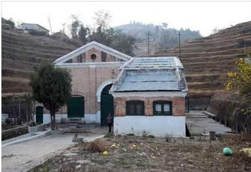
नेपालको पहिलो विद्युत् गृह, फर्पिङ काठमाडौँ
अन्तरदेशीय उच्च भोल्टेज प्रसारण लाइन निर्माण सम्पन्न भई देशभित्रका निर्माणाधीन जलविद्युत् तथा प्रसारण आयोजनाहरूको निर्माण कार्य तदारुकताका साथ अगाडि बढाउँदै आइएको छ ।
नेपालको समग्र विकास र समृद्धिका लागि जलस्रोतको उपयोग एक मात्र दिगो आधारको रूपमा स्थापित भएको छ । जलविद्युत् क्षेत्रमा निजी लगानीकर्ता तथा पुँजी बजारको आकर्षण बढ्दै गएको अवस्थामा यस क्षेत्रमा लगानीको सम्भावना बढ्न गई थप आयोजनाहरू निर्माणमा सहयोग पुग्ने देखिएको छ । जलविद्युत् उत्पादनको प्रचुर सम्भावना र विद्युत् खपतका लागि आन्तरिक बजार यथेष्ट मात्रामा उपलब्ध रहेको तथा निर्यातको सम्भावनासमेत रहेको अवस्थामा यस क्षेत्रलाई देशको ऊर्जा अभाव हटाउँदै आर्थिक विकासको भरपर्दो आधारको रूपमा स्थापित गर्नु अपरिहार्य भएको छ ।
तालिका नं. ८.१० जलविद्युत्का १ मेगाबाटभन्दा ठूला आयोजनाहरू
| S.N. | Project | Capacity (MW) | River | Issue Date | Validity |
|---|---|---|---|---|---|
| 1 | Khani Khola - 1 | 40 | Khani Khola | 1/28/2068 | 1/27/2103 |
| 2 | Rahughat | 40 | Rahughat | 4/3/2068 | 4/2/2103 |
| 3 | Tadi Khola | 5 | Tadi Khola | 6/4/2068 | 6/3/2103 |
| 4 | Upper Mailung -A | 6.42 | Mailung Khola | 9/11/2068 | 9/10/2103 |
| 5 | Chhahare Khola | 17.5 | Chhahare | 4/2/2069 | 4/1/2104 |
३०४/नेपाल परिचय
| 6 | Kabeli-A | 37.6 | Kabeli Khola | 5/21/2069 | 5/20/2104 |
|---|---|---|---|---|---|
| 7 | Junbeshi | 5.2 | Junbeshi | 9/20/2069 | 9/19/2104 |
| 8 | Khorunga Khola | 4.8 | Khoranga Khola | 12/29/2069 | 12/28/2104 |
| 9 | Khani Khola (Dolakha) | 30 | Khani Khola | 2/10/2070 | 2/9/2105 |
| 10 | Middle Midim | 4.8 | Midim Khola | 4/10/2070 | 4/9/2105 |
| 11 | Upper Trishuli 3B | 37 | Trishuli | 4/27/2070 | 4/26/2106 |
| 12 | Upper Parajuli Khola | 2.15 | Parajuli Khola | 5/3/2070 | 5/2/2105 |
| 13 | Lohare Khola | 4.2 | Lohore Khola | 6/8/2070 | 6/7/2106 |
| 14 | Salankhu Khola | 2.5 | Salankhu | 7/5/2070 | 7/4/2105 |
| 15 | Madhya Bhotekoshi | 102 | Bhote koshi | 8/18/2070 | 8/17/2106 |
| 16 | Rawa Khola HPP | 6.5 | Rawa Khola | 10/28/2070 | 10/27/2105 |
| 17 | Lower Solu Hydropower Project | 82 | Solu Khola | 12/5/2070 | 12/4/2106 |
| 18 | Upper Myagdi | 37 | Myagdi Khola | 12/6/2070 | 12/5/2106 |
| 19 | Rupse Khola | 4 | Rupse Khola | 1/5/2071 | 1/4/2106 |
| 20 | Khare Hydropower Project | 24.1 | Khare | 1/21/2071 | 1/20/2106 |
| 21 | Sabha Khola A | 10.4 | Sabha Khola | 6/28/2071 | 6/27/2107 |
| 22 | Durbang Myagdi Khola | 25 | Myagdi Khola | 11/4/2071 | 11/3/2106 |
| 23 | Balephi A | 22.14 | Balephi | 1/6/2072 | 1/5/2107 |
| 24 | Upper Modi A | 42 | Modi Khola | 3/4/2072 | 3/3/2107 |
| 25 | Langtang Khola Small Hydropower Project | 20 | Langtang | 6/1/2072 | 5/31/2107 |
| 26 | Siddhi Khola | 10 | Siddhi Khola | 6/13/2072 | 6/12/2107 |
| 27 | Upper Tadi | 11 | Tadi Khola | 6/22/2072 | 6/21/2107 |
| 28 | Ruru Banchu - 1 | 16 | Rurubanchu Khola | 6/27/2072 | 6/26/2107 |
| 29 | ChulepuKhola Hydropower Project | 8.52 | Chulepu,Dhunde Khola | 1/13/2073 | 1/12/2108 |
| 30 | Chauri Khola | 5 | Chauri | 1/14/2073 | 1/13/2108 |
| 31 | Tanahu HEP | 140 | Seti Khola | 2/3/2073 | 2/2/2109 |
| 32 | Phalakhu Khola HPP | 5 | Phalankhu Khola | 3/24/2073 | 3/23/2108 |
| 33 | Phalakhu Khola HPP | 14.7 | Phalankhu Khola | 4/10/2073 | 4/9/2108 |
| 34 | Liping Khola | 16.26 | Liping | 4/12/2073 | 4/11/2108 |
| 35 | Lower Khorunga | 5.5 | Khoranga Khola | 4/12/2073 | 4/11/2108 |
| 36 | Sano Milti Khola SHP | 3 | Milti | 6/9/2073 | 6/8/2108 |
| 37 | Rahughat Mangale | 37 | Rahughat | 7/29/2073 | 7/28/2109 |
| 38 | Upper Nyasim Khola | 43 | Nyasem Khola | 8/7/2073 | 8/6/2108 |
| 39 | Ruru Banchu Khola- 2 | 12 | Rurubanchu Khola | 9/19/2073 | 9/18/2108 |
| 40 | Khimti II | 48.8 | Khimti Khola | 9/22/2073 | 9/21/2108 |
| 41 | Upper Lapche Khola | 52 | Lapche | 10/21/2073 | 10/20/2108 |
| 42 | Daram Khola HEP | 9.6 | Daram | 10/23/2073 | 10/22/2109 |
| 43 | Ankhu Khola | 42.9 | Ankhu Khola | 10/27/2073 | 10/26/2109 |
| 44 | Sabha Khola-B HPP | 15.1 | Sabha Khola | 11/30/2073 | 11/29/2108 |
| 45 | Middle Tara Khola SHP | 1.7 | Tara Khola | 12/13/2073 | 12/12/2109 |
| 46 | Upper Chauri Khola | 6 | Chauri | 1/29/2074 | 1/28/2109 |
| 47 | Tamakoshi V | 99.8 | Tama Koshi | 2/9/2074 | 2/8/2109 |
| 48 | Lower Chirkhuwa | 4.06 | Chirkhuwa | 2/22/2074 | 2/21/2109 |
नेपाल परिचय/३०५
| 49 | Mewa Khola Hydropower project | 50 | Mewa Khola | 4/15/2074 | 4/14/2109 |
|---|---|---|---|---|---|
| 50 | Buku-Kapati Hydropower Project | 5 | Buku | 5/8/2074 | 5/7/2109 |
| 51 | Super Nyadi Hydropower Project | 40.27 | Nyadi | 5/14/2074 | 5/13/2109 |
| 52 | Marsyangdi Besi | 50 | Marsyangdi | 6/1/2074 | 5/31/2109 |
| 53 | Lower Selang Khola | 1.475 | Selang | 6/29/2074 | 6/28/2109 |
| 54 | Upper Trishuli-1 | 216 | Trishuli | 7/23/2074 | 7/22/2109 |
| 55 | Lapche Khola | 160 | Lapche | 9/2/2074 | 9/1/2110 |
| 56 | Kasuwa Khola HPP | 45 | Kasuwa | 9/3/2074 | 9/2/2109 |
| 57 | Saptang Khola HPP | 2.5 | Saptang | 9/21/2074 | 9/20/2109 |
| 58 | Buku Khola | 6 | Buku | 9/25/2074 | 9/24/2109 |
| 59 | Nyam Nyam | 6 | Nyam Nyam Khola | 9/28/2074 | 9/27/2109 |
| 60 | Super Trishuli | 100 | Trishuli | 10/2/2074 | 10/6/2109 |
| 61 | Lower Irkhuwa Khola | 14.15 | Irkhuwa Khola | 10/23/2074 | 10/22/2109 |
| 62 | Rele Khola | 6 | Rele Khola | 10/28/2074 | 10/27/2110 |
| 63 | Irkhuwa Khola-B HPP | 15.524 | Irkhuwa Khola | 11/3/2074 | 11/2/2109 |
| 64 | Rasuwa Bhotekoshi | 120 | Bhote koshi | 11/3/2074 | 11/2/2109 |
| 65 | Upper Gaddi Gad | 1.55 | Gaddi Gad | 11/30/2074 | 11/29/2109 |
| 66 | Upper Modi HPP Cascade Project | 18.2 | Modi Khola | 12/2/2074 | 12/1/2109 |
| 67 | Arun 3 | 900 | Arun | 1/20/2075 | 1/19/2105 |
| 68 | Middle Daram Khola-A HPP | 3 | Daram | 2/9/2075 | 2/8/2110 |
| 69 | Middle Daram Khola-B HPP | 4.5 | Daram | 2/9/2075 | 2/8/2110 |
| 70 | Upper Khudi | 26 | Khudi | 2/9/2075 | 2/8/2110 |
| 71 | Upper Tamor | 285 | Tamor | 2/27/2075 | 2/26/2110 |
| 72 | Hewa A Small HEP | 5 | Hewa Khola | 4/14/2075 | 4/13/2110 |
| 73 | Tila-1 Hydropower Project | 440 | Tila | 5/8/2075 | 5/7/2110 |
| 74 | Tila-2 Hydropower Project | 420 | Tila | 5/8/2075 | 5/7/2110 |
| 75 | Super Aankhu Khola Hydropower Project | 25.4 | Ankhu Khola | 6/2/2075 | 6/1/2110 |
| 76 | Lower Manang Marsyangdi | 139.2 | Marsyangdi | 7/18/2075 | 7/17/2110 |
| 77 | Manang Marsyangdi | 135 | Marsyangdi | 8/1/2075 | 7/30/2110 |
| 78 | Garchyang Khola | 6.6 | Garchyang | 8/18/2075 | 8/17/2110 |
| 79 | Upper Marsyangdi 1 | 138 | Marsyangdi | 9/10/2075 | 9/9/2110 |
| 80 | Upper Lohore SHP | 4 | Lohore Khola | 9/16/2075 | 9/15/2110 |
| 81 | Chameliya (Chhetigad) | 85 | Chameliya Khola | 9/20/2075 | 9/19/2110 |
| 82 | Upper Piluwa Hills Small HP Project | 4.99 | Piluwa, Tupuwa & Chhange Khola | 9/23/2075 | 9/22/2110 |
| 83 | Kaligandaki Gorge | 180 | Kali Gandaki | 11/27/2075 | 11/26/2110 |
| 84 | Nyadi-Phidi HPP | 21.4 | Nyadi,Phidi | 11/27/2075 | 11/26/2110 |
| 85 | Upper Rahughat | 48.5 | Rahughat | 12/11/2075 | 12/10/2110 |
| 86 | Super Hewa HPP | 6 | Hewa Khola | 12/26/2075 | 12/25/2110 |
| 87 | Middle Kaligandaki | 53.539 | Kali Gandaki | 1/9/2076 | 1/8/2111 |
| 88 | Tadi Khola Cascade | 3 | Tadi Khola | 1/30/2076 | 1/29/2110 |
| 89 | Bajra Madi Hydropower Project | 24.8 | Madi Khola | 2/7/2076 | 2/6/2111 |
| 90 | Jhyaku Khola HPP | 5.243 | Jhyaku | 2/8/2076 | 2/7/2111 |
২০০৩/পদ্মাল মর্যাদা
| 91 | Upper Trishui-2 HPP | 102 | Trishuli | 2/9/2076 | 2/8/2111 |
|---|---|---|---|---|---|
| 92 | Tinau Khola HPP | 3.44 | Tinau | 2/14/2076 | 2/13/2111 |
| 93 | Likhu Khola HPP | 30 | Likhu Khola | 2/24/2076 | 2/23/2111 |
| 94 | Chisang Khola -A Small HEP | 1.8 | Chisang | 7/24/2076 | 7/23/2111 |
| 95 | Lower Hewa Khola-A HPP | 7.3 | Hewa Khola | 7/26/2076 | 7/25/2111 |
| 96 | Sagu Khola HEP | 20 | Sangu Khola | 8/12/2076 | 8/11/2111 |
| 97 | Upper Ankhu Khola | 38 | Ankhu Khola | 9/7/2076 | 9/6/2111 |
| 98 | Jogmai Cascade | 5.2 | Jogmai Khola | 10/1/2076 | 9/30/2112 |
| 99 | Sangu Khola HPP | 5 | Sangu (Sorun) Khola | 10/1/2076 | 9/30/2111 |
| 100 | Middle Mewa HPP | 73.5 | Mewa Khola | 10/12/2076 | 10/11/2112 |
| 101 | Nupche Likhu HEP | 57.5 | Nupche , Likhu | 10/12/2076 | 10/11/2112 |
| 102 | Upper Myagdi-I HEP | 53.5 | Myagdi Khola | 10/21/2076 | 10/20/2111 |
| 103 | Sagu khola 1 HPP | 5.5 | Sagu | 10/21/2076 | 10/20/2111 |
| 104 | Phedi Khola (Thumlung) Small HPP | 4.3 | Phedi khola (Thumlung) | 11/15/2076 | 11/14/2111 |
| 105 | Thulo Khola Hydropower Project | 21.3 | Thulo Khola | 12/10/2076 | 12/9/2111 |
| 106 | Upper Irkhuwa HPP | 14.5 | Irkhuwa,Phedi | 2/23/2077 | 2/22/2112 |
| 107 | Isuwa Khola Hydropower Project | 97.2 | Isuwa Khola | 2/27/2077 | 2/26/2112 |
| 108 | Upper Maiwa HPP | 17.85 | Maiwa | 3/3/2077 | 3/2/2112 |
| 109 | Madme Khola HPP | 24 | Madme Khola | 3/3/2077 | 3/2/2112 |
| 110 | Lower Balephi | 20 | Balephi | 3/5/2077 | 3/4/2112 |
| 111 | Madya Super Daraundi HPP | 10 | Daraundi | 3/5/2077 | 3/4/2112 |
| 112 | Rauje Khola HPP | 18.6 | Rauje Khola | 3/5/2077 | 3/4/2112 |
| 113 | Bhotekoshi 5 HEP | 62 | Bhotekoshi | 3/14/2077 | 3/13/2112 |
| 114 | Karuwa Seti HEP | 32 | Seti | 3/15/2077 | 3/14/2112 |
| 115 | Upper Piluwa 3 HPP | 4.95 | Piluwa Khola | 4/9/2077 | 4/8/2112 |
| 116 | Hidi Khola HEP | 6.82 | Hidi Khola | 4/14/2077 | 4/13/2112 |
| 117 | Middle Tadi HPP | 5.5 | Tadi Khola | 4/27/2077 | 4/26/2112 |
| 118 | Pegu Khola Small Hydropower Project | 4.35 | Pegu | 5/11/2077 | 5/10/2112 |
| 119 | Jurimba Khola Small Hydropower Project | 7.63 | Jurimba | 5/29/2077 | 5/28/2112 |
| 120 | Landruk Modi HEP | 86.59 | Modi | 6/1/2077 | 5/31/2112 |
| 121 | Sunigad | 11.05 | Suni Gad | 6/7/2077 | 6/6/2112 |
| 122 | Mid Rawa Khola HEP | 2.5 | Rawa Khola, Sung Khola | 6/7/2077 | 6/6/2112 |
| 123 | Dudhkoshi-2 (Jaleswar) HPP | 70 | Dudh Koshi | 6/7/2077 | 6/6/2112 |
| 124 | Mudi Khola Hydropower Project | 14.7 | Mudi Khola | 6/13/2077 | 6/12/2112 |
| 125 | Lower Mid Rawa Khola HEP | 4 | Rawa | 6/15/2077 | 6/14/2112 |
| 126 | Menchet Khola HPP | 7 | Menchet Khola | 6/18/2077 | 2112-08617-0 |
| 127 | Tamor Mewa | 128 | Tamor & Mewa | 6/25/2077 | 6/24/2112 |
| 128 | Midim 1 HEP | 13.424 | Midim Khola | 7/3/2077 | 7/2/2112 |
| 129 | Myagdi Khola Hydropower Project | 57.3 | Myagdi Khola | 7/25/2077 | 7/24/2112 |
| 130 | Upper Bhurundi Khola SHP | 3.75 | Bhurundi Khola | 7/27/2077 | 7/26/2112 |
| 131 | Nyasim HEP | 35 | Nyasem Khola | 7/28/2077 | 7/27/2112 |
সাঁয়াল परिचয়/২০১৯
| 132 | Upper Daraudi Hydropower Project | 9.2 | Daraudi | 8/14/2077 | 8/13/2112 |
|---|---|---|---|---|---|
| 133 | Setikhola HEP | 22 | Seti Khola | 9/2/2077 | 9/1/2112 |
| 134 | Mewa khola HEP | 23 | Mewa Khola | 10/2/2077 | 10/1/2112 |
| 135 | Bagar Khola HEP | 5.5 | Bagar Khola | 10/6/2077 | 10/5/2112 |
| 136 | Dudhpokhari Chepe HEP | 8.836 | Chepe Khola | 10/8/2077 | 10/7/2112 |
| 137 | Jum Khola HEP | 56 | Jum | 3/27/2078 | 3/26/2113 |
| 138 | Upper Daraudi B Small HEP | 8.3 | Daraudi | 4/10/2078 | 4/9/2113 |
| 139 | Upper Daraudi-C HEP | 9.82 | Daraudi | 4/10/2078 | 4/9/2113 |
| 140 | Upper Balephi | 46 | Balephi | 2078-04-32 | 2113-04-31 |
| 141 | Ilep Tatopani Khola HEP | 25 | Tatopani(Ilep) Khola | 5/15/2078 | 5/14/2113 |
| 142 | Super Melamchi HEP | 23.6 | Melamchi | 5/21/2078 | 5/20/2113 |
| 143 | Upper Piluwa-1 HEP | 7.7 | Piluwa | 7/7/2078 | 7/6/2113 |
| 144 | Super Kabeli Khola HEP | 12 | Kabeli Khola | 7/12/2078 | 7/11/2113 |
| 145 | Kabeli-3 Cascade HEP | 21.93 | Kabeli | 8/2/2078 | 8/1/2113 |
| 146 | Bhalaudi Khola HEP | 2.645 | Bhalaudi | 8/2/2078 | 8/1/2113 |
| 147 | Isuwa Khola PRoR Cascade HEP | 40.1 | Isuwa Khola | 9/6/2078 | 9/5/2113 |
| 148 | Arun Khola 2 HEP | 2 | Arun Khola | 9/28/2078 | 9/27/2113 |
| 149 | Sona Khola HEP | 9 | Sona Khola, Khahare Khola | 9/28/2078 | 9/27/2113 |
| 150 | Mathillo Kabeli HEP | 28.1 | Kabeli Khola | 10/5/2078 | 10/4/2113 |
| 151 | Super Lower Bagmati HEP | 41.86 | Bagmati | 10/12/2078 | 10/11/2113 |
| 152 | Middle Hongu Khola B HEP | 22.9 | Hongu Khola | 10/12/2078 | 10/11/2113 |
| 153 | Upper Seti HEP | 20 | Seti Khola, Sadhu Khola | 10/17/2078 | 10/16/2113 |
| 154 | Upper Deumai Khola Small HEP | 8.3 | Deumai | 11/6/2078 | 11/5/2113 |
| 155 | Sepli Khola HEP | 5 | Sepli Khola | 12/17/2078 | 12/16/2113 |
| 156 | Tamor Khola-5 HEP | 37.5 | Tamor | 12/20/2078 | 12/19/2113 |
| 157 | Kunban Khola HEP | 20 | Kunban | 12/28/2078 | 12/27/2113 |
| 158 | Himchuli Dordi HEP | 57 | Dordi | 1/28/2079 | 1/27/2114 |
| 159 | Mathillo Thulo Khola A HEP | 22.5 | Thulo Khola | 2/9/2079 | 2/8/2114 |
| 160 | Upper Sagu HEP | 10 | Khartal,Kothali(Sagu) | 3/5/2079 | 3/4/2114 |
| 161 | Tiplyang Kaligandaki HEP | 58 | Kali Gandaki | 3/5/2079 | 3/8/2114 |
| 162 | Madhya Hongu Khola -A HPP | 22 | Hongu Khola | 3/9/2079 | 3/8/2114 |
| 163 | Chino Khola HEP | 7.9 | Chino | 3/20/2079 | 3/19/2114 |
| 164 | Ghunsa Khola HEP | 77.5 | Ghunsa Khola | 4/8/2079 | 4/7/2114 |
| 165 | Simbuwa Khola HEP | 70.3 | Simbuwa Khola | 4/23/2079 | 4/22/2114 |
| 166 | Dudh khola HEP | 65 | Dudh Khola | 4/25/2079 | 4/24/2114 |
| 167 | Jaldigad | 21 | Jaldi Gad | 5/1/2079 | 4/30/2114 |
| 168 | Middle Trishuli Ganga nadi | 15.625 | Trishuli | 5/17/2079 | 5/16/2114 |
| 169 | Upper Madi 0 HEP | 43 | Madi | 5/30/2079 | 5/29/2114 |
| 170 | Middle Mailung (cascade) HEP | 13 | Mailung Khola | 7/15/2079 | 7/14/2114 |
| 171 | Aayu Malun Khola HEP | 21 | Malun | 8/6/2079 | 8/5/2114 |
| 172 | Upper Kabeli-2 HEP | 15 | Kabeli Khola | 8/7/2079 | 8/6/2114 |
| 173 | Palun Khola Small HEP | 21 | Palun Khola | 9/18/2079 | 9/17/2114 |
১০০/পাঁচাল परिचय
| 174 | Syarpu HEP | 3.3 | Dharne | 9/21/2079 | 9/20/2114 |
|---|---|---|---|---|---|
| 175 | Bhotekoshi 1 HEP | 44 | Bhotekoshi | 9/21/2079 | 9/20/2114 |
| 176 | Luja Khola HEP | 24.8 | Luja Khola | 9/26/2079 | 9/25/2114 |
| 177 | Upper Pikhuwa Khola HEP | 4.9 | pikhuwa | 10/9/2079 | 10/8/2114 |
| 178 | Sani Bheri HEP | 44.52 | Sani Bheri | 10/12/2079 | 10/11/2114 |
| 179 | Siwakhola HEP | 9.3 | Siwa Khola | 10/20/2079 | 10/19/2114 |
| 180 | Lower Bhim Khola HEP | 6.05 | Bhim Khola | 11/17/2079 | 11/16/2114 |
| 181 | Chujung Khola HEP | 48 | Chujung | 12/2/2079 | 12/1/2114 |
| 182 | Lower Nyadi HEP | 12.6 | Nyadi | 12/9/2079 | 12/8/2114 |
| 183 | Budum HEP | 14.5 | budum | 12/12/2079 | 12/11/2114 |
| 184 | Akhu Khola-2 HEP | 20 | Akhu Khola | 12/12/2079 | 12/11/2114 |
| 185 | Mistri Khola-2 HEP | 12 | Mistri | 12/12/2079 | 12/11/2114 |
| 186 | Rolwaling Khola HEP | 22 | Rolwaling | 12/20/2079 | 12/19/2114 |
| 187 | Shyam Khola HEP | 7.25 | Shyam Khola | 1/13/2080 | 1/12/2115 |
| 188 | Tallo Indrawati HEP | 4.5 | Indrawati | 1/20/2080 | 1/19/2115 |
| 189 | Dana Khola HEP | 49.95 | Dana Khola | 1/21/2080 | 1/20/2115 |
| 190 | Upper Sardi HEP | 2.9 | Sardi, kutmi | 2/9/2080 | 2/8/2115 |
| 191 | Darkhola Small HEP | 6.5 | Dar Khola | 2/17/2080 | 2/16/2115 |
| 192 | Badigad Khola HEP | 24.6 | Badigad | 2/23/2080 | 2/22/2115 |
| 193 | Upper Mewa Khola -A HEP | 31.92 | Mewa Khola | 2080-02-32 | 2115-02-31 |
| 194 | Super Tamor HEP | 166 | Tamor | 3/6/2080 | 3/5/2115 |
| 195 | Upper Mailung B HEP | 17 | Mailung Khola | 3/13/2080 | 3/12/2115 |
| 196 | Lower Khani-B HEP | 6.2 | Khani | 4/8/2080 | 4/7/2115 |
| 197 | Upper Dudh Khola HPP | 30.4 | Dudh Khola | 4/11/2080 | 4/10/2115 |
| 198 | Super Ghalemdi HEP | 9.14 | Ghalemdi | 4/17/2080 | 4/16/2115 |
| 199 | Tatopani khola HEP | 19 | Tatopani(Ilep) Khola | 4/25/2080 | 4/24/2115 |
| 200 | Upper Bhurundi Khola- A Small HEP | 4.5 | Bhurundi | 5/12/2080 | 5/11/2115 |
| 201 | Lapche- Tamakoshi HEP | 42 | Lapche, Tamakoshi | 6/14/2080 | 6/13/2115 |
| 202 | Super Machha Khola HEP | 4.6 | Machha Khola | 6/18/2080 | 6/17/2115 |
| 203 | Miwaje Khola HEP | 4.95 | Miwaje | 6/26/2080 | 6/25/2115 |
| 204 | Upper Sankhuwa Khola HEP | 40 | Sankhuwa | 6/30/2080 | 6/29/2115 |
| 205 | Sinkos Khola HEP | 3.45 | Sinkos Khola | 8/8/2080 | 8/7/2115 |
| 206 | Super Seti HPP | 24 | Seti Khola and Batase Khola | 9/1/2080 | 8/30/2115 |
| 207 | Sabha Khola C HEP (Cascade) | 6.3 | Sabha | 9/1/2080 | 8/30/2115 |
| 208 | Budhi Gandaki HEP | 341 | Budhi Gandaki | 9/5/2080 | 9/4/2115 |
| 209 | Thuligad Khola Small PRoR HEP | 17 | Thuli Gad | 9/11/2080 | 9/10/2115 |
| 210 | Syano Khola HEP | 4.75 | Syano Khola | 9/18/2080 | 9/17/2115 |
| 211 | Pikhuwa Pashupati HEP | 4.1 | Pikhuwa | 9/24/2080 | 9/23/2115 |
| 212 | Jagdulla HEP | 106 | Bheri | 9/25/2080 | 9/24/2115 |
| 213 | Budhi Gandaki Kha | 260 | Budhigandaki | 9/25/2080 | 9/24/2115 |
| 214 | Budhi Gandaki Ka | 130 | Budhi Gandaki | 10/8/2080 | 10/7/2115 |
| 215 | Upper Junbesi Khola HEP | 5.875 | Junbeshi | 10/8/2080 | 10/7/2115 |
| 216 | Machhe Khola HEP | 16 | Machha Khola | 11/4/2080 | 11/3/2115 |
| 217 | Dobhan Khola HEP | 24.5 | Dobhan Khola | 12/5/2080 | 12/4/2115 |
नेपाल परिचय/३०९
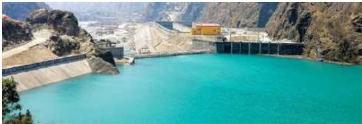
अपर तामाकोशी हाइड्रोपावर, दोलखा
| 218 | Khimti Ghwang Khola HEP | 9 | Khimti khola and Ghwan Khola | 12/8/2080 | 12/7/2115 |
|---|---|---|---|---|---|
| 219 | Kisedi Khola Small HEP | 4.1 | Kisedi Khola | 12/13/2080 | 12/12/2115 |
| 220 | Suti Khola HEP | 21 | Suti | 12/14/2080 | 12/13/2115 |
| 221 | Sisuwa Khola HEP | 13.5 | Sisuwa, Hinuwa | 12/14/2080 | 12/13/2115 |
| 222 | Yaru Khola HEP | 30.59 | Yaru | 12/25/2080 | 12/24/2115 |
| 223 | Chilun Khola HEP | 43.2 | Chhilung | 12/25/2080 | 12/24/2115 |
| 224 | Bajhang Upper Seti HEP | 216 | Seti | 1/31/2081 | 1/30/2116 |
| 225 | Dordi Dudh Khola Small HEP | 19 | Dordi | 2/9/2081 | 2/8/2116 |
| 226 | Brahmayani HEP | 36.52 | Balefi Khola | 2/17/2081 | 2/16/2116 |
| 227 | Upper Brahmayeni HEP | 15.15 | Nyamya Masal | 2/20/2081 | 2/19/2116 |
| 228 | Lower Dudhkunda Hydropower Project | 9.48 | Dudha Kund | 2/21/2081 | 2/20/2116 |
| 229 | Upper Sunigad HEP | 14 | Suni Gad | 2/22/2081 | 2/21/2116 |
| 230 | Kalika Kaligandaki HEP | 38.16 | Kali Gandaki | 3/5/2081 | 3/4/2116 |
| 231 | Malta Bagmati Small HEP | 6.5 | Bagmati | 3/19/2081 | 3/18/2116 |
| 232 | Tadi Ghyamphedi HEP | 8 | Tadi Khola | 3/21/2081 | 3/20/2116 |
| 233 | Kalinchok Small HEP | 3 | Budhekhani,Shikhaarjun,Bhumit | 3/21/2081 | 3/20/2116 |
| 234 | Lower Apsuwa HEP | 54 | Apsuwa Khola | 3/23/2081 | 3/22/2116 |
| 235 | Rawa Khola HEP | 5.4 | Rawa | 4/17/2081 | 4/16/2116 |
| 236 | Gasali Khola Small HEP | 4.5 | Gasali | 4/18/2081 | 4/17/2116 |
| 237 | Thaligad Small HPP | 2 | Thaligad | 4/25/2081 | 4/24/2116 |
| 238 | Hongu Khola I HEP | 30 | Hongu Khola | 2081-04-31 | 4/30/2116 |
| 239 | Balephi Khola HEP | 40 | Balephi | 5/6/2081 | 5/5/2116 |
| 240 | Syalque Khola Small HEP | 4.8 | Syalque khola,Danque Khola | 5/7/2081 | 5/6/2116 |
| 241 | Chainpur Seti HEP | 210 | Seti Khola | 5/9/2081 | 5/8/2116 |
| 242 | Daraudi Nadi HEP | 9.84 | Daraundi | 5/28/2081 | 5/27/2116 |
| 243 | Lower Thulo Khola HEP (RoR Cascade) | 4.75 | Thulo Khola | 6/7/2081 | 6/6/2116 |
| 244 | Palun khola 1 HEP | 30 | Palun Khola | 6/7/2081 | 6/6/2116 |
| 245 | Lower Tawakhola HEP | 7.1 | Tawa Khola | 6/13/2081 | 6/12/2116 |
| 246 | Super Iwa Khola HEP | 4.795 | Iwa Khola | 7/2/2081 | 7/1/2116 |
| 247 | Chepe Khola Cascade Hydropower Project | 2 | Chepe Khola | 7/7/2081 | 7/6/2116 |
210/नेपाल परिचय
| 248 | Sankhuwa Khola HEP | 41.061 | Sankhuwa | 8/6/2081 | 8/5/2116 |
|---|---|---|---|---|---|
| 249 | Devdhunga Chaku Khola HEP | 3.56 | Chaku and Devdhunga | 8/9/2081 | 8/8/2116 |
| 250 | Budhi Gandaki Prok Khola HEP | 81 | Budhi Gandaki | 9/2/2081 | 9/1/2116 |
| 251 | Dhaula Khola HEP | 10.8 | Dhaula, khewas | 11/11/2081 | 11/10/2116 |
| 252 | Bakan Khola HEP | 44 | Bakan | 11/23/2081 | 11/22/2116 |
| 253 | Sani Bheri 3 HEP | 46.72 | Sani Bheri | 12/8/2081 | 12/7/2116 |
| 254 | Middle Chameliya HEP | 28.304 | Chameliya Khola | 12/13/2081 | 12/12/2116 |
| 255 | Super Most Iwa HEP | 4.6 | Iwa | 12/17/2081 | 12/16/2116 |
| 256 | Nar Khola HEP | 58.9 | Nar Khola, Soti Khola | 12/22/2081 | 12/21/2116 |
| 257 | Seti Nadi-3 HEP | 87 | Seti Khola | 1/28/2082 | 1/27/2117 |
| 258 | Upper Most Iwa Khola HEP | 4.1 | Iwa | 2/23/2082 | 2/22/2117 |
| 259 | Lodo Khola Sana HEP | 1.6 | Lodo | 2/25/2082 | 2/24/2117 |
| 260 | Irkhuwa Khola Ka HEP | 15 | Irkhuwa Khola | 2/27/2082 | 2/26/2117 |
| 261 | Super Sabha Khola Small Hydropower Project | 4.1 | Sabha Khola | 2/28/2082 | 2/27/2117 |
| 262 | Lower Kalanga Gad HEP | 8 | Kalanga Gad | 2082-02-30 | 2117-02-29 |
स्रोत : विद्युत् विकास विभाग, २० जुन २०२५
आर्थिक सर्वेक्षण २०८१/०८२ अनुसार २०८१ फागुनसम्म कुल जडित विद्युत् क्षमता ३६०२ मेगावाट रहेको छ। जसमध्ये जलविद्युत् जडित क्षमता ३३३६ मेगावाट, सौर्य ऊर्जा ११७ मेगावाट, वैकल्पिक ऊर्जा प्रवर्द्धन केन्द्रद्वारा उत्पादित विद्युत् ९० मेगावाट, तापीय (थर्मल प्लान्ट) ऊर्जा ५३.४ मेगावाट र चिनीमिलबाट सहउत्पादन प्रविधिबाट उत्पादित विद्युत् ६ मेगावाट रहेको छ। वैकल्पिक ऊर्जासहित विद्युत् पहुँच ९९ प्रतिशत जनसङ्ख्यामा पुगेको छ। सामुदायिक उपभोक्तासमेत विद्युत् उपयोग गर्ने ग्राहकको सङ्ख्या २०८१ असारसम्म ५४ लाख ५९ हजार रहेकोमा २०८१ फागुनसम्ममा यस्तो सङ्ख्या ५५ लाख ९७ हजार पुगेको छ।
वैकल्पिक ऊर्जा
नवीकरणीय ऊर्जा प्रविधिको विकास तथा विस्तार गर्ने उद्देश्यले वैकल्पिक ऊर्जा प्रवर्द्धन केन्द्रबाट नवीकरणीय ऊर्जा प्रविधिको प्रचार प्रसार तथा प्रवर्द्धनको माध्यमद्वारा ग्रामीण जनताको जीवनस्तरमा सुधार ल्याउने, वातावरण संरक्षण गर्ने, रोजगारीका अवसरमा वृद्धि गर्ने र नवीकरणीय ऊर्जा प्रविधिलाई व्यवसायीकरण गरी यससम्बन्धी उद्योगधन्दाको विकास गर्ने कार्यहरू हुँदै आएका छन्।
आर्थिक सर्वेक्षण २०८१/०८२ अनुसार २०८० फागुनसम्म नवीकरणीय ऊर्जा स्रोतबाट विद्युत्को पहुँच पुगेको जनसङ्ख्या करिब ८ प्रतिशत रहेकोमा २०८१ फागुनसम्म यस्तो जनसङ्ख्या ८.५ प्रतिशत पुगेको छ। त्यसैगरी ३६ लाख घरधुरीले नवीकरणीय ऊर्जाको प्रयोग गरेका छन्। वैकल्पिक ऊर्जाअन्तर्गतका लघु तथा साना जलविद्युत् आयोजनाबाट उत्पादित विद्युत् १,४१० किलोवाट रहेकोमा २०८१/०८२ को फागुनसम्म सौर्य ऊर्जा प्रविधिबाट थप २२५ किलोवाट विद्युत् उत्पादन भई २०८१ फागुनसम्म यस्तो उत्पादन ३,९८५ किलोवाट पुगेको छ।
नेपाल परिचय/३११
८.७ सिँचाइ
सिँचाइजन्य पूर्वाधारको विकासले गर्दा नेपालमा बर्सेनि सिँचाइ सुविधा विस्तार हुँदै गएको छ। आर्थिक सर्वेक्षण २०८१/०८२ अनुसार संघीय आयोजनाबाट २०८१ फागुनसम्म १५ लाख ७३ हजार ५ सय ५९ हेक्टर जमिनमा सिँचाइ सुविधा विस्तार भएको छ। सिँचाइ गुरुयोजना सन् २०१९ अनुसार कुल सिँचाइयोग्य जमिन २५ लाख ३६ हजार ३ सय १९ हेक्टरमध्ये ६२.२८ प्रतिशत जमिनमा सिँचाइ सुविधा विस्तार भएको छ। साथै कुल कृषियोग्य जमिन ३५ लाख ५७ हजार ७ सय ६४ हेक्टरमध्ये ४४.४ प्रतिशत जमिनमा सिँचाइ सुविधा पुगेको छ।
आर्थिक वर्ष ०८१/०८२ को फागुनसम्म सतहतर्फ १,०५५ हेक्टर, लिफ्टतर्फ २७६ हेक्टर, भूमिगततर्फ ३,१३६ हेक्टर गरी थप ४,४६७ हेक्टर जमिनमा सिँचाइ सुविधा पुगेको छ। आर्थिक वर्ष २०८०/०८१ मा १३ हजार ५ सय २४ हेक्टर जमिनमा सिँचाइ सुविधा विस्तार भएको थियो। २०८१ फागुनसम्म सिँचाइ सुविधा पुगेको क्षेत्रमध्ये ६५.४ प्रतिशतमा सतह सिँचाइ, ३४.३ प्रतिशतमा भूमिगत सिँचाइ र ०.३ प्रतिशतमा लिफ्ट तथा जलाशयमार्फत सिँचाइ सुविधा पुगेको छ।
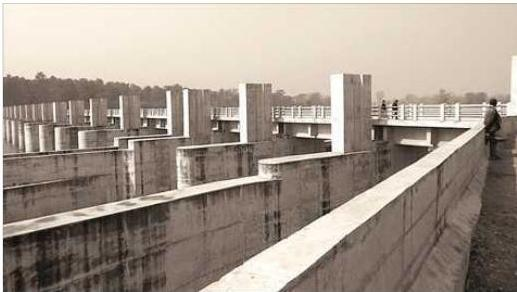
सिक्टा सिँचाइ आयोजना
नेपालको कुल सिँचित क्षेत्रमध्ये करिब एकतिहाइ भूभागमा मात्र वर्षभरि सिँचाइ सुविधा पुगेको छ। दिगो, न्यायोचित र सन्तुलित क्षेत्रीय विकासका लागि समावेशी तथा साझेदारी व्यवस्थापनको आधारमा देशका विद्यमान सतह तथा भूमिगत जलस्रोतको अधिकतम सदुपयोगबाट वर्षभरि सिँचाइ सुविधा पुग्याउने पूर्वाधार विकास गर्दै कृषि उत्पादन तथा उत्पादकत्व वृद्धि गरी गरिबी न्यूनीकरण गर्दै समृद्धितर्फ अगाडि बढ्नु आजको आवश्यकता हो।
नेपाल परिचय/३१३
८.८ सञ्चार तथा सूचना प्रविधि
नेपालको भौगोलिक बनावटको कारणबाट सिर्जित शिक्षा, स्वास्थ्य, कृषि, पर्यटन तथा व्यापारलगायतका आर्थिक तथा सामाजिक क्षेत्रको दिगो विकासको चुनौतीको सामना गर्न एउटा सशक्त पूर्वाधारको रूपमा स्थापित सञ्चार तथा सूचना प्रविधिको विकासले कानुनको शासन, भ्रष्टाचारमुक्त र चुस्त प्रशासन, विकेन्द्रीकरण, आर्थिक अनुशासन तथा सार्वजनिक सेवा प्रवाह र स्रोतको कुशल व्यवस्थापन जस्ता सुशासनका आधारभूत मान्यतालाई आत्मसात् गरी सर्वसाधारणले पाउनुपर्ने सेवा छिटो, छरितो तथा कम खर्चिलो ढङ्गबाट प्रदान गर्न सम्भव भएको देखिन्छ ।
नेपालमा पहिलो पटक वि.सं. २०२८ सालको राष्ट्रिय जनगणनाको तथ्याङ्क प्रशोधनका क्रममा कम्प्युटर प्रविधिको प्रयोग भएपश्चात् नेपालले सूचना प्रविधिको क्षेत्रमा प्रवेश गरेको देखिन्छ । उक्त राष्ट्रिय जनगणनाको तथ्याङ्क प्रशोधनमा 2nd Generation कम्प्युटर IBM1401 को प्रयोग भएको र तत्पश्चात् २०३८ सालको राष्ट्रिय जनगणनाका क्रममा 2nd Generation कम्प्युटर ICL2950/10 को प्रयोग भएको थियो ।
सूचना प्रविधिको विकास क्रममा सन् १९३० मा त्रिभुवन विश्वविद्यालयअन्तर्गत स्थापना भएको प्राविधिक प्रशिक्षण संस्थानलाई सन् १९७२ मा Institute of Engineering को नाममा परिवर्तन गरी सन् १९९४ र १९९८ मा क्रमश: Electronics and Computer Engineering को अध्यापन सुरु भएको थियो । सन् १९७४ मा Electronic Data Processing केन्द्रको स्थापना भयो, जसलाई ६ वर्षपछि National Computer Training Centre (NCC) नामकरण गरियो । सन् १९९४ मा तत्कालीन नेपाल राजकीय विज्ञान तथा प्रविधि प्रज्ञा प्रतिष्ठानले Mercantile Communication Pvt. Ltd. को साथमा नेपालमा पहिलो पटक Email Service प्रयोगमा ल्याई Internet को सुरुवात भएको थियो । सञ्चार तथा सूचना प्रविधिको विकासलाई प्रोत्साहन तथा नियमन गर्नका लागि सन् १९९८ दूरसञ्चार प्राधिकरणको स्थापना भयो । यसैसाथ नेपाल टेलिकमले सन् २००० देखि Internet Service उपलब्ध गराउँदै आएको छ ।
सूचना प्रविधिलाई विकास, व्यवस्थापन तथा विद्युतीय सुशासन कायम गर्न सन् २००२ मा NITC को स्थापना भई Government Integrated Data Centre (GIDC) निर्माण भएको तथा सन् २००८ मा प्रमाणीकरण नियन्त्रकको कार्यालय स्थापना भएको छ । यसका साथै सूचना प्रविधिलाई नियमन गर्नका लागि सन् २००० मा Information Technology Policy लागु भई सन् २०१५ मा Information Communication Policy मा अध्यावधिक गरिएको साथै सन् २००८ मा Electronic Transaction Act लागु गरिएको छ ।
नेपालमा दूरसञ्चार सेवाको सुरुवात वि.सं. १९७० मा दूरसञ्चार सेवाको स्थापनापश्चात् भएको हो । वि.सं. १९७१ मा काठमाडौँदेखि रक्सौलसम्म ट्रङ्कल टेलिफोनको व्यवस्था भयो । चन्द्रशमशेरको पालामा सर्वप्रथम म्याग्नेटो टेलिफोनको प्रयोगबाट भएको थियो ।
वि.सं. १९९१ पौष १ गते टेलिफोन हेड अफिसको (दूरसञ्चारसम्बन्धी कार्यालय) स्थापना भयो। काठमाडौँमा तत्कालीन राणा प्रशासकहरूको प्रयोगका लागि वि.सं. १९९२ मा २५ लाइनको अटोमेटिक टेलिफोन जडान गरियो।
त्यसैगरी १९९२ पौष २ गते ‘सवाल ऐन’ जारी गरी टेलिफोन सेवा सर्वसाधारणका लागि खुला गरिएको थियो। त्यसैगरी दूरसञ्चारले वि.सं. १ ९९३ मा काठमाडौँ-धनकुटा ट्रङक्ल (STD) सेवा सुरु गरेको थियो। वि.सं. २००६ सालमा नेपालगन्ज, भैरहवा, इलाम, धनकुटा, विराटनगरमा आकाशवाणी सेटहरू राखिए। वि.सं.२००७ सालमा काठमाडौँमा सि.बी. म्यानुअल एक्सचेन्ज (१०० लाइन) को स्थापना भयो। २००९ सालसम्ममा २१ ओटा जिल्लामा आकाशवाणी केन्द्रहरू खडा भए। प्रथम पञ्चवर्षीय योजनामा सञ्चारलाई पहिलो प्राथमिकता दिएपछि नेपालले वि.सं. २०१४ मङ्सिर २० मा अन्तर्राष्ट्रिय दूरसञ्चार सङ्घ (ITU) को सदस्यता प्राप्त गर्यो। प्रथम पञ्चवर्षीय योजना लागु भएपछि २०१६ सालमा काठमाडौँमा दूरसञ्चार विभाग खुल्यो। यसले राजधानीको बढ्दो मागलाई ध्यानमा राखी वि.सं. २०१९ सालमा अटोमेटिक क्रसबार एक्सचेन्ज (४०० लाइन) को स्थापना गर्यो। वि.सं.२०२१ आश्विन १५ मा V.H.F. प्रणालीको अन्तर्राष्ट्रिय दूरसञ्चार सेवाको शुभारम्भ भयो। तेस्रो योजनाकालमा विभिन्न जिल्लामा आकाशवाणी स्टेसनहरू थप गरिए। साथै, ५० ओटा आकाशवाणी स्याटेलाइट स्टेसनहरू थप गरिए र सातओटा एरिया कन्ट्रोल स्टेसनहरू पनि चलन थाले। वि.सं. २०२६ सालमा समिति ऐन, २०१३ अनुसार दूरसञ्चार समितिको गठन भयो। त्यसैगरी वि.सं.२०२८ मा टेलेक्स सेवा पनि प्रारम्भ भयो। वि.सं. २०२८ मा सञ्चार संस्थान ऐन, २०२८ प्रारम्भ भएपछि नेपाल दूरसञ्चारले अन्तरदेशीय माइक्रोवेव ट्रान्समिसन लिङ्कको स्थापना गर्यो।
वि.सं. २०५४ फागुन २० गते नेपाल दूरसञ्चार प्राधिकरणको स्थापना भयो। वि.सं. २०५५ सालमा दूरसञ्चारले नेपालका सम्पूर्ण टेलिफोन डिजिटल प्रणालीबाट सञ्चालन गर्ने कार्यको थालनी गर्यो। दूरसञ्चारको क्षेत्रमा विकासक्रमसँगै वि.सं. २०५६ वैशाख १ गते सेलुलर मोबाइल सेवाको प्रारम्भ भयो। दूरसञ्चार नीति २०६० लागु भएपछि २०६० भाद्र ६ गते नेपालमा पहिलो पटक प्रिपेड मोबाइल सेवा प्रारम्भ गरियो। दूरसञ्चार संस्थान वि.सं. २०६१ वैशाख १ गतेदेखि विधिवत् रूपमा नेपाल टेलिकममा परिणत भई निजी क्षेत्रका अन्य सशक्त दूरसञ्चार सेवाप्रदायक संस्थाहरूसँग प्रतिस्पर्धामा उत्रिएको छ।
फ्रिक्वेन्सी एक प्रकृतिप्रदत्त स्रोत भएकाले यसको राष्ट्रिय हितअनुकूल उपयोग गर्न र राजस्व प्राप्त गर्न सरकारले २०६९ कात्तिक १९ गते दूरसञ्चार सेवाको रेडियो फ्रिक्वेन्सी (बाँडफाँट तथा मूल्यसम्बन्धी) नीति, २०६९ ल्याएको छ।
आर्थिक सर्वेक्षण २०८१/०८२ अनुसार ब्रोडब्यान्ड इन्टरनेट सेवाको पहुँच सेवा स्थानीय तहका ६,५६६ वडा केन्द्रमा विस्तार भएको छ। इन्टरनेट ग्राहकको घनत्व १४४.२३ प्रतिशत पुगको छ। डिजिटल टेलिभिजनको पहुँच ७२ प्रतिशत घरधुरीमा पुगेको छ।
३१४/नेपाल परिचय
२०८१ फागुनसम्म २ करोड ९७ लाख ७६ हजार टेलिफोन प्रयोगमा रहेका छन् । २०८१ असारसम्म यो सङ्ख्या ३ करोड ६२ लाख २६ हजार रहेको थियो । मोबाइल सेवाको विस्तारसँगै आधारभूत (फिक्स्ड) टेलिफोनको सङ्ख्या क्रमश: घट्दै गएको छ । हालको स्थितिमा देहायबमोजिमका संस्थाहरूले सञ्चार तथा सूचना प्रविधिको क्षेत्रमा टेवा पु्याइरहेका छन् :
तालिका नं. ८.११
आ.व. २०८०/०८१ सम्म सञ्चालनमा रहेका अनुमतिपत्रसम्बन्धी विवरण
| सि.नं. | दूरसञ्चार सेवाको नाम | जम्मा सेवाप्रदायक |
|---|---|---|
| १. | आधारभूत दूरसञ्चार सेवा | १ |
| २. | आधारभूत टेलिफोन सेवा | १ |
| ३. | जि.एस.एम. सेलुलर मोबाइल सेवा | २ |
| ४. | नेटवर्क सेवाप्रदायक | २४ |
| ५. | भिस्याट प्रयोगकर्ता | १० |
| ६. | इन्टरनेट (इमेलसहित) | ११४ |
| ७. | जि.एम.पि.सि.एस. सेवा | २ |
| ८. | ग्रामीण इन्टरनेट/इमेल | ३ |
| ९. | अन्तर्राष्ट्रिय टूङ्क टेलिफोन सेवा | १ |
| १०. | भिस्याट प्रयोगकर्ता (ग्रामीण) | ११० |
| जम्मा | २६८ |
स्रोत : दूरसञ्चार प्राधिकरण, वार्षिक प्रतिवेदन २०८१
तालिका नं. ८.१२
आ.व. २०८१/०८२ को जेठ मसान्तसम्म अनुमतिप्राप्त प्रसारण सेवाप्रदायकहरूको विवरण
| सि.नं. | सञ्चार सेवाको नाम | जम्मा सेवाप्रदायक |
|---|---|---|
| १. | रेडियो सञ्चालन संस्था | १२०० |
| २. | स्थानीय तथा राष्ट्रिय टेलिभिजन | २५० |
नेपाल परिचय/३१५
| ३. | विदेशी डाउनलिङ्क टेलिभिजन | १०९ |
|---|---|---|
| ४. | विदेशी टि.भी.को सिग्नल वितरक | ८ |
| ५. | DTH | १ |
| ६. | DTTB का माध्यमाट टि.भी. वितरक | ५ |
| ७. | IPTV का माध्यमाट टि.भी. वितरक | १० |
स्रोत : सूचना तथा प्रसारण विभाग
हुलाक सेवा विभागले आफ्नो सेवा विविधीकरण गर्ने क्रममा सुगमदेखि दुर्गम जिल्लाहरूसम्म विद्युतीय सञ्चारको पहुँच पु्याउने मूल ध्येयका साथ टेलिसेन्टर सेवा सञ्चालन गरेको पाइन्छ । हुलाक सेवाअन्तर्गत १ गोश्वारा हुलाक कार्यालय, १ हुलाक प्रशिक्षण केन्द्र, ६ हुलाक निर्देशनालयहरू, ७० जिल्ला हुलाक कार्यालय, ६७६ हुलाक कार्यालयहरू, ३,०७४ अतिरिक्त हुलाक कार्यालयहरू रहेका छन् । सबै हुलाक वस्तुको Tracking गर्ने व्यवस्थाका लागि Postal Internal Tracking System (PITS) प्रणालीको सुरुवात भएको छ । प्रत्येक स्थानीय तहमा हुलाक सेवाको संरचना विस्तार गरिएको छ ।
८.९ वातावरण तथा जलवायु परिवर्तन
नेपाल भूपरिवेष्टित देश हो । नेपालको भौगोलिक बनावट नवीन पर्वत शृङ्खलाले बनेको छ । औद्योगिक विकास अत्यन्त न्यून भए तापनि तराई, पहाड र काठमाडौँ उपत्यकामा प्रशस्त ईटभट्टाहरू छन् । अव्यवस्थित सहरीकरणले सहरछेउका नदीनाला अत्यन्त नराम्रोसँग प्रदूषित भएका छन् । वर्षा अनियमित छ । भूक्षयीकरण उच्च छ । सन् २०२४ मा नेपालको वन क्षेत्र कुल भूभागको ४६.०८ प्रतिशत पुगेको छ । सन् २०१९ मा यस्तो क्षेत्र ४५.३१ प्रतिशत रहेको थियो । सन् १९६६ देखि नेपाल World Meteorological Organization (WMO) को सदस्य राष्ट्र भएको छ । सरकारले अन्तर्राष्ट्रिय रूपमा वातावरण संरक्षणका लागि पहल सुरु गरेको भए पनि वातावरण संरक्षणका लागि नीति सन् १९८७ मा ल्याएको थियो । पछिल्ला वर्षहरूमा खैरो क्षेत्र (Brown Sector), पानी (Blue Sector) र वन (Green Sector) को संरक्षणमा सरकार प्रयत्नशील छ ।
विश्वव्यापी रूपमा देखा परेको जलवायु परिवर्तन (Climate Change) को नेपालमा पर्ने प्रभावको न्यूनीकरण गर्न रणनीति अवलम्बन गरिएको छ भने जलवायु परिवर्तनले नेपालको हिमालय क्षेत्रमा प्रभाव परेको अनुभव रहेको छ । तापक्रमको वृद्धिदर बढेको छ । हिउँ फलने क्रम उच्च छ । यसर्थ नेपाल सरकारले नेपालको हिमालय क्षेत्रको संरक्षणका लागि सगरमाथाको आधारशिविर कालापथरमा विश्व समुदायको ध्यान आकर्षण गर्न मिति २०६६ मङ्सिर १९ (४ डिसेम्बर २००९) मा मन्त्रिपरिषद्को बैठक बसेको थियो । हिमालय भएका विश्वका देशहरूबीच हिमालय जोगाउन नेटवर्क बढाउने, विश्वको ध्यानाकर्षण
३१६/नेपाल परिचय
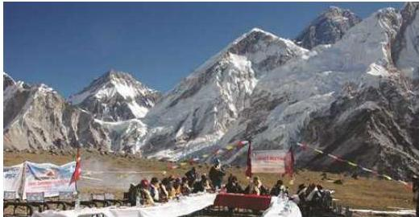
कालापत्थरमा मन्त्रिपरिषद् बैठक, १९ मिसिर २०६६
गराउने उद्देश्यले विशेष प्रयासहरूको प्रारम्भ पनि गरिएको छ। पूर्वाधार निर्माण गर्दा वातावरण प्रभाव मूल्याङ्कन गर्नुपर्ने कानुनी व्यवस्था रहेको छ। प्रभाव मूल्याङ्कन नगरी निर्माण कार्य गर्दा प्रतिकूल प्रभाव पनि सम्भावना उच्च रहन्छ। विश्वव्यापी रूपमा तापक्रम बढ्दै गएको छ। विश्व मौसम विज्ञान सङ्गठनको विश्लेषणअनुसार पृथ्वीको औसत तापक्रम सन् १८५०-१९०० को तुलनामा हाल १.५ डिग्री सेल्सियसले बढेको छ। बढ्दो तापक्रमको असर वातावरण, आर्थिक तथा सामाजिक क्षेत्रमा पर्नुका साथै मानव समुदाय र पारिस्थितिकीय प्रणालीबीचको सन्तुलन कायम गर्ने चुनौती बढेको छ। जलवायुसम्बन्धी सम्मेलनमा नेपाल र स्विडेनबीच अन्तर्राष्ट्रिय कार्बन व्यापार सम्भौता भएको छ। साथै अनुकूलन कोषमा विगतमा नेपालको तर्फबाट अन्तर्राष्ट्रिय संस्थाले मात्र पहुँच पाउने गरेकोमा राष्ट्रिय प्रकृति संरक्षण कोषले समेत पहुँच पाउने गरी मान्यता पाएको छ। पर्वतीय मुद्दालाई स्थापित गराउन सन् २०२५ मे १६ देखि १८ सम्म सगरमाथा संवाद सम्पन्न भएको छ।
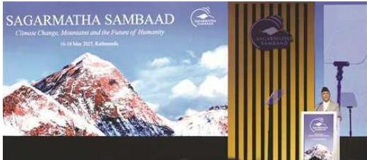
‘सगरमाथा सम्वाद’लाई सम्बोधन गर्नुहुँदै सम्माननीय प्रधानमन्त्री। २०८२ जेठ २
नेपाल परिचय/३१७
बाँकेको नेपालगन्ज र दाङको घोराही, बाराको सिमरा र सुनसरीको भुम्कासमेत चार स्थानमा वायु गुणस्तर मापन केन्द्र स्थापना भई वायु गुणस्तरको अवस्था तत् समयमा (Real Time) सार्वजनिक हुन थालेको छ। सरकारले कार्बन व्यापारको नियमन र व्यवस्थापनका लागि सन् २००८ देखि रेड (Reducing Emission From Deforestation and Forest Degradation) कार्यक्रम सुरु गरी रेड प्लस कार्यान्वयनमा ल्याएको छ।
८.१० दिगो विकास
विकास एक बहुआयामिक अवधारणा हो। यसले समाजमा निरन्तर प्रगतिउन्मुख परिवर्तनको अपेक्षा राखेको हुन्छ। मानव सभ्यताको सुरुवातसँगै विकास कुनै न कुनै रूपमा निरन्तर हुँदै आएको पाइन्छ। विकसित मुलुकहरूले विकासका नाममा उपलब्ध प्राकृतिक स्रोतसाधनको चरम दोहन गरेपछि सिर्जित वातावरण असन्तुलनको समाधानस्वरूप सन् १९७० को दशकबाट दिगो विकासको अवधारणा सुरु भएको हो। सन् १९८७ मा ब्रुटल्यान्ड कमिसनद्वारा हाम्रो साभा भविष्य (Our common Future) नामक प्रतिवेदन सार्वजनिक गरी सर्वप्रथम दिगो विकास शब्दको प्रयोग गरेको हो, जसअनुसार वर्तमान पुस्ताले उपलब्ध प्राकृतिक संसाधनलाई दृष्टिगत गरी भविष्यमा आफ्ना सन्ततिको आवश्यकता पूरा गर्ने क्षमतामा कुनै असर नपर्ने गरी स्रोत साधनहरूको सही संरक्षण गर्दै विवेकपूर्ण तवरले परिचालन गरिने विकास अवधारणा नै दिगो विकास हो। यो विकास आफ्नैमा टिकाउ विकास एवम् विनाशरहित विकास हो। यसले नवीकरणीय स्रोतको उपयोगलाई प्रोत्साहन र प्रवर्द्धन गर्दछ। दिगो विकासलाई सामान्यतया वातावरणीय आयामसँग जोडेर हेर्ने गरिए तापनि यो एक बहुआयामिक तथा गतिशील विषय हो,
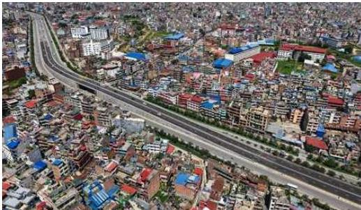
३१८/नेपाल परिचय
जसले विकासका राजनीति, आर्थिक, सामाजिक, सांस्कृतिकलगायत समग्र आयामलाई समेटेको हुन्छ ।
नेपालको सन्दर्भमा आठौँ योजनाबाट औपचारिक रूपमा दिगो विकासको योजना सुरु भएको हो । नेपालको संविधानले विकाससम्बन्धी नीतिमा दिगो विकास कायम गर्ने नीति अवलम्बन गरेको छ । साथै हाल संयुक्त राष्ट्रसङ्घबाट अनुमोदित दिगो विकास लक्ष्यहरूलाई विकासका समग्र पक्षहरूमा आन्तरिकीकरण गर्दै राष्ट्रिय योजना आयोगको नेतृत्वदायी भूमिकामा सरकार, निजी क्षेत्र, सहकारी क्षेत्र, गैरसरकारी क्षेत्र, सामुदायिक क्षेत्रलगायतका सम्पूर्ण विकास साभेदारहरूको संयुक्त प्रयासमा कार्यान्वयन गर्दै आएको छ । राष्ट्रिय योजना आयोगका अनुसार नेपालमा दिगो विकास लक्ष्य कार्यान्वयन गर्न वार्षिक औसत रु. २० खर्ब २५ अर्ब लाग्ने अनुमान गरिएको छ ।
दिगो विकासका लक्ष्यहरू
संयुक्त राष्ट्रसङ्घको ७०औँ महासभाले सन् २०१५ सेप्टेम्बर २५ मा सन् २०१६ देखि २०३० सम्म विश्वको रूपान्तरण र विकासका हरेक आयाममा कसैलाई पनि पछाडि नछोड्ने प्रतिबद्धताका साथ दिगो विकासका लक्ष्यहरूको घोषणा गरेको छ । यसअन्तर्गत दिगो विकासका १७ ओटा लक्ष्य, १६९ ओटा परिमाणात्मक लक्ष्य र ३३२ ओटा विश्वव्यापी सूचक निर्धारण गरिएका छन् । जसमा दिगो विकासमा १७ ओटा लक्ष्य निम्नानुसार रहेका छन् :
- लक्ष्य नं. १ : सबै स्थान र सबै प्रकारका गरिबीको अन्त्य
- लक्ष्य नं. २ : भोकमरी नियन्त्रण, खाद्य सुरक्षा र पोषणस्तर सुधार एवम् दिगो कृषिको प्रवर्द्धन
- लक्ष्य नं. ३ : सबैका लागि स्वस्थ जीवनको सुनिश्चितता
- लक्ष्य नं. ४ : सबैका लागि समावेशी, समन्यायिक र स्तरीय शिक्षाको अवसर सुनिश्चितता
- लक्ष्य नं. ५ : लैङ्गिक समानता र महिला तथा बालिका सशक्तीकरण
- लक्ष्य नं. ६ : सबैका लागि खानेपानी तथा सरसफाइको दिगो उपलब्धताको सुनिश्चितता
- लक्ष्य नं. ७ : सबैका लागि भरपर्दो र धानिन सक्ने आधुनिक ऊर्जाको पहुँच सुनिश्चितता
- लक्ष्य नं. ८ : भरपर्दो, समावेशी र दिगो आर्थिक वृद्धि एवम् सबैका लागि उत्पादनशील रोजगारी
- लक्ष्य नं. ९ : सबल पूर्वाधार, दिगो र समावेशी औद्योगीकरण र नवप्रवर्तन प्रवर्द्धन,
नेपाल परिचय/३१९
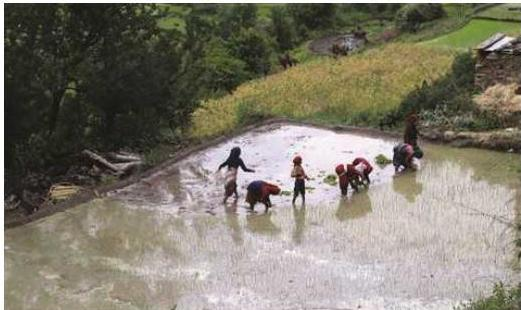
धान रोप्दै कृषक
लक्ष्य नं. १० : देशभित्र र देशहरूबीच रहेको असमानता न्यूनीकरण लक्ष्य नं. ११ : स्वस्थ एवम् सुरक्षित सहर तथा मानव बसोबास लक्ष्य नं. १२ : दिगो उत्पादन र उपभोगको सुनिश्चितता लक्ष्य नं. १३ : जलवायु परिवर्तनका असर न्यूनीकरणका लागि तत्काल कार्य लक्ष्य नं. १४ : समुद्र, समुद्री किनार र समुद्री स्रोतको संरक्षण एवम् दिगो उपभोग लक्ष्य नं. १५ : दिगो विकासका लागि जैविक विविधता संरक्षण, वन व्यवस्थापन र यसविरुद्धका कार्यको नियन्त्रण लक्ष्य नं. १६ : शान्त र समावेशी समाज प्रवर्द्धन, न्यायमा समान पहुँच र प्रभावकारी एवम् जवाफदेही संस्थात्मक संरक्षण लक्ष्य नं. १७ : दिगो विकासका लागि कार्यान्वयन संयन्त्रको सबलीकरण र विश्व साझेदारी ।
३२०/नेपाल परिचय
परिच्छेद : बी